流程智能：AI重构制造业核心业务链

个人网站

个人微信

公众号
个人网站
个人微信
公众号
流程智能：AI重构制造业核心业务链
作者：树懒老K（拙一）
出版：树懒老K
年份：2026
版权所有 · 未经许可不得转载
**可带走的一句话**：先瘦身，再智能
—— 不要拿AI给一个烂流程加速。
你每天被多少供应商追着卖AI？别急着买。这一章的结论很直接：制造业流程中大约40%的问题，用精益方法就能解决——零成本、两周见效。用精益都优化不干净的流程，上AI只会让浪费跑得更快。
本章给了你一套筛选框架：双轨优化模型。Track A（精益净化）把流程里的废话、多余签字、重复搬运砍掉；Track B（智能重构）分三个阶段渐进推进，数据不到60分就别碰Phase 3。配合四色标注系统，每个流程节点该不该上AI、上到什么程度，一目了然。
在动手改流程之前，先搞明白三个问题：我们现在的流程为什么长这样？它的局限在哪？AI来了之后怎么改？
每到一个制造业企业，我都会先问一个看起来很简单的问题：
“你们的销售订单从录入到出货，中间经过几个人的手？”
答案通常在6到12个之间——销售→销售主管→信用专员→计划员→仓库→生产排产→采购…还不算中间可能退回修改的环节。但很少有人能说出”为什么必须是这6个人”。不是因为每个环节都创造价值，而是因为”系统就是这么设计的”。
这就是事务逻辑的代价：流程在诞生时是有道理的，但时间一长，没人记得当初为什么这么设计。大家都在按”系统规定的”做事，而不是按”最合理的”做事。
这一章先拆开这个黑盒子。
§TOC0-1§
SAP的流程设计逻辑可以用一句话概括：流程=单据+审批+过账。
这套逻辑有一个专业术语叫状态机（State Machine）。每个单据处于某个状态（已创建→已审批→已发货→已开票→已过账），状态转移由特定事件触发。
当你用VA01创建销售订单时，订单状态是”已创建”。你执行VL01N做发货过账，状态变成”已交货”。VF01开票后，状态变成”已开票”。MB1A做发货过账后，库存和财务同时更新。
这套体系是强大的。强在三点：
可追溯：每笔业务有源可查。三年前的一张采购订单，今天还能追踪是谁创建的、谁审批的、哪个供应商的、对应哪张入库单、付了多少钱。
可审计：财务合规的基础。凭证不能随意删除，修改留痕。应付账款和采购订单之间存在明确的勾稽关系。
确定性强：流程的每一步有明确的入口和出口。不会出现”不知道单子走到哪了”的模糊状态。
但这套体系的强大，建立在三个假设之上：
假设一：信息是充分且及时的。
ERP假设你在执行每一个事务操作时，已经掌握了你需要的所有信息。但现实是：计划员在跑MRP时不知道供应商的实际产能；销售在做报价时不知道当前生产线的负荷。信息要么不充分，要么有延迟。
假设二：规则是预设且稳定的。
审批流程里的金额阈值、价格折扣区间、信用额度标准——这些规则在系统上线时设定好之后，通常一年半载才会调整一次。但市场变化是按周算的。规则跟不上变化，就成了瓶颈。
假设三：跨系统的衔接是通畅的。
SAP内部模块之间（SD→MM→PP→FI）的集成是固化的。但制造业的系统环境从来不是只有SAP——还有MES、WMS、PLM、SCADA，中间可能还夹着一个国内ERP做财务（双系统并行的情况在中国制造业非常普遍）。事务逻辑跨不了系统，一旦流程跨越系统边界，靠的就全是人了。
国内ERP在处理这三个假设时，有它自己的逻辑差异。
财务导向 vs 供应链导向：国内ERP很多是从财务软件起家的，流程设计的第一优先是”账要平”，而不是”物要顺”。同一个业务在供应链侧的处理逻辑和在财务侧的处理逻辑，有时是两套逻辑在同一个系统里各走各的。
集团管控 vs 单体企业：国内的大型制造企业很多是集团架构，财务核算层层合并。流程设计的重心有时不是”效率”，而是”控制”——审批流特别长、权限设置特别细、到了子公司那层又灵活处理。
这两套逻辑没有对错之分，只是设计原点的不同。当我们在说”AI重构流程”的时候，不能忽视这个起点差异——同一个流程域的痛点，在SAP企业和在国内ERP企业里，痛的位置可能不一样。
我不是在否定事务逻辑。没有ERP，制造业不可能在过去三十年里实现全球化和规模化——标准化流程是规模化的前提。
问题在于：预设规则+状态迁移+事后过账这套模式，在AI时代碰到了三堵墙：
这三堵墙，就是AI重构的机会。
§TOC0-2§
理论来源：深智工坊·Flow Doctor 企业流程诊断方法论
这是我在做企业流程诊断时最常见的场景：
企业CIO跟我说：”我们采购审批太慢了，从需求发起到下单平均要5天，能不能用AI加速？”
我通常会先做一个动作——不碰AI，先把流程画出来，看每一个节点在做什么。
三小时之后，我们发现了真实问题：
我说：”你先把这些浪费去掉，再谈AI。”
这就是双轨优化模型的核心理念：不是每个流程问题都值得用AI解决。先除浪费，再谈智能。
我见过的流程优化项目里，大约40%的问题用精益方法就能解决——不用花一分钱买AI工具。而且有一个铁律：如果你用精益方法都优化不干净的流程，用AI只会加速放大这些浪费。
精益净化不做技术投入，只做物理层面的流程瘦身。核心工具是ECRS：
消除（Eliminate） 问一个问题：这个节点如果不做，会发生什么？ - 连续三人签字的审批单——如果第二个人和第三个人的判断标准完全一致，只留一个人就够了。 - 每周一次的”例行汇报会”——如果三个月没有人在会上做出过重要决策，这个会就不该存在。
合并（Combine） 问一个问题：这几个节点能不能让一个人做？ - 采购申请录入→采购申请审核→采购比价——如果一个人能同时做这三件事，为什么要分三个人？
重排（Rearrange） 问一个问题：节点的顺序可不可以变？ - 先审批再比价还是先比价再审批？先有订单再配货还是先配货再有订单？
简化（Simplify） 问一个问题：能不能用更少的信息做决策？ - 一份采购申请单上30个字段，实际决策需要的只有5个——那其他25个字段为什么不能后补？
配合七大浪费识别工具，精益净化可以快速定位流程中的非增值环节：
| 浪费类型 | 在流程中的表现 | 典型例子 |
|---|---|---|
| 缺陷 | 返工、纠错、补充信息 | 采购申请被退回修改 |
| 等待 | 单据卡在某个审批节点 | 领导出差导致审批搁置 |
| 动作 | 重复搬运信息 | 从系统导出→Excel→邮件发送 |
| 过度处理 | 做了不需要的步骤 | 三级同质审批 |
| 库存 | 待处理单据积压 | 未匹配的三单差异堆积 |
| 过量生产 | 做了不需要的产出 | 每日生成但没人看的报表 |
| 搬运 | 信息在不同系统间转移 | 从SAP复制到OA |
精益净化的输出是一份“不花钱就能做的改善清单”。我曾经给一个客户做采购流程精益净化，发现的14个浪费点中有9个可以直接消除，实施周期2周，零成本。
执行完Track A之后再评估，你会发现：原先以为需要AI解决的问题，有一部分已经不存在了。
在完成了精益净化之后，剩下的那部分问题——那些确实是信息处理、预测判断、内容生成层面的瓶颈——才是AI该上场的地方。
智能重构不是”把所有节点都换成AI”，而是分三个深度渐进推进：
Phase 1：节点内增强
现有的流程节点不动，只在节点内部引入AI辅助。
场景示例： - 计划员的预测环节：原来靠Excel+经验判断，现在引入AI预测模型，自动产出初稿，计划员做确认。 - 采购合同审查：原来法务逐条审，现在AI先审一遍，标注出高风险条款，法务只关注有问题的部分。 - 财务费用审核：原来逐单核票，现在AI做异常检测，只有标记为异常的单据才送给人工。
数据要求：低。只需要该节点的历史数据。
对人影响：小。人在流程中的角色不变，工作方式变了（从”自己做”到”审核AI做的”）。
Phase 2：节点间重构
修改相邻节点的连接方式，让AI成为节点之间的”智能桥”。
场景示例： - 销售报价和交期承诺：原来销售报完价→把订单交给计划员估算交期→有冲突再回头改。现在AI在报价环节同时做交期预测和产能校验，报价单生成时就带可靠交期。 - 排产和物料齐套：原来排产完→再去查物料够不够→不够就改排产，来回两三轮。现在AI在排产环节同时跑物料可用性校验，不满足条件的工单自动调整优先级。
数据要求：中等。需要跨节点数据的关联分析。
对人影响：中。流程节点数可能减少，部分节点的角色改变。
Phase 3：拓扑重构
不按原有节点走，而是重新设计流程拓扑——因为AI的能力，流程的骨架变了。
场景示例： - 质量检验：原来来料检→过程检→出货检，三个节点三个工位三个系统。现在质量检验不按”阶段”分，而是按”产品”分——每条产线配备一个AI质量闭环：在线传感器实时采集数据，AI实时预判质量异常，自动调整工艺参数或触发停机，所有数据同步回SAP QM模块。 - 异常处理：原来异常上报→逐级审批→跨部门协调→处理方案→执行→确认关闭，一套流程走下来一周。现在异常事件驱动AI第一时间诊断，自动匹配处理方案，推送到相关人确认执行，全程记录。
数据要求：高。需要跨域数据的全面数字化，最好有数字孪生基础。
对人影响：大。岗位职责重新定义，流程Owner的角色升级。
核心规则：Phase的准入门槛不达标时，强制降级。 - 数据质量不到60分的，不要尝试Phase 3 - 组织对AI信任度低的，先走Phase 1建立信任 - 不要为了”上AI”而上AI，哪个Phase能解决真实痛点就用哪个
这两个轨道不是二选一。最佳实践是做在同一个流程上做双轨并行：先用Track A做快速净化（2-4周），再做Track B的准入门槛评估，决定能走到哪个Phase。
§TOC0-3§
在走进流程之前，先建立对AI能力的清醒认知。我把制造流程中会用到的AI分成两类：
决策式AI：擅长”判断”
本质上是模式识别任务：给我大量历史数据，我学会其中的规律，然后用在新数据上做预测或分类。
在流程中的典型应用：
| 任务类型 | 具体场景 | 数据要求 | 成熟度 |
|---|---|---|---|
| 预测 | 需求预测、交期预测、设备故障预测 | 历史数据足够+外部因子 | 高 |
| 分类 | 供应商分级、客户分群、异常分类 | 有标注的历史数据 | 高 |
| 回归 | 定价优化、工艺参数推荐 | 多维连续变量数据 | 中高 |
| 异常检测 | 费用异常、质量异常、流程偏离 | 正常样本多+少量异常标注 | 高 |
决策式AI的优点是：输出确定、可验证、容易嵌入现有流程。缺点是需要结构化数据，且泛化能力有限——在一个工厂训练好的模型，搬到另一个工厂往往需要重新训练。
生成式AI：擅长”生成”
基于大语言模型的能力，理解自然语言、生成内容、知识检索、逻辑推理。
在流程中的典型应用：
| 任务类型 | 具体场景 | 限制 | 成熟度 |
|---|---|---|---|
| 文本生成 | 自动写报告、生成SOP、回复客户邮件 | 需要人工核对事实 | 中高 |
| 知识检索 | 政策问答、合同条款查询、技术文档定位 | 需要RAG架构支撑 | 中高 |
| 对话交互 | 系统操作助手、异常处理咨询 | 需要权限和安全管控 | 中 |
| 信息提取 | 从非结构化文档中抽关键信息 | 准确性依赖提示工程 | 中 |
生成式AI的优点是：灵活、不需要大量结构化数据、用户界面体验好。缺点是：输出不确定（每一次可能都不同）、存在幻觉风险、需要强管控的人工复核节点。
两者的关系是互补而非替代。在流程重构中，决策式AI负责”算得准”的部分（预测、分类、检测），生成式AI负责”写得好”的部分（报告、分析、沟通）。很多时候是两者协同：决策式AI判断异常，生成式AI解释异常原因并给出处理建议。
在逐节点分析流程时，需要一套一目了然的标注方式。本书采用四色标注系统，在之后的每个流程域分析中统一使用：
🟢 绿色 — 适合AI完全替代 该节点的产出是标准化的，不涉及人际信任，数据是数字化的，允许机器自主执行。如：三单匹配、费用异常检测、周期性库存盘点。
🟡 黄色 — 适合AI辅助，人做决策 该节点需要人的判断经验，但AI可以提供建议或初稿。如：供应商评分、排产方案推荐、财务分析报告生成。
🔴 红色 — 必须人工处理，AI不宜介入 该节点涉及法律责任、人际信任、战略判断或创新性工作。如：重大采购合同的最终签署、组织架构调整决策、客户关系维护。
⚪ 灰色 — 暂不判断，需更多信息 该节点目前信息不足，无法确定AI的切入方式。需要了解更多业务上下文后再判断。
这四色标注对应着四种嵌入方式：
| 标注 | 嵌入方式 | 例子 |
|---|---|---|
| 🟢 完全替代 | AI自主执行+人工仅处理异常 | AI自动匹配PO-GR-IV三方数据 |
| 🟡 辅助决策 | AI出建议→人做选择确认 | AI推荐最优供应商→采购经理确认 |
| 🟡 辅助生成 | AI出草稿→人做最终输出 | AI自动生成财务分析报告→CFO审阅 |
| 🟡 智能质检 | AI事后检查人的输出 | AI复核已审报销单→标记遗漏 |
说完了AI能做什么，也必须说AI不能做什么。
AI不能在没有数据的地方工作。 很多制造企业的流程问题数据质量极差——系统里是”脏数据”，甚至根本没有数据。没有干净的结构化数据，决策式AI没法启动。这种情况下，首先要做的不是上AI，是把数据治理做好。
AI不能做价值观判断。 当流程节点涉及”这个客户值不值得花精力维护”“这批瑕疵品是放行还是报废”，背后是企业长期以来建立的价值观和风险管理偏好。AI可以给数据支撑，但不能替人做这种判断。
AI不能弥补糟糕的流程设计。 如果采购流程本身已经存在三级同质审批、频繁退回、信息断点等结构性缺陷，AI的介入只会让这些缺陷运行得更快。这也是为什么双轨优化模型中，Track A（精益净化）必须走在Track B（智能重构）前面。
§TOC0-4§
APQC的流程分类框架（PCF）是制造业最广泛使用的流程标准参考模型。它把企业流程分为12大类、1000+个流程活动，覆盖从战略规划到运营执行的完整链路。
选择APQC的理由有三：
它不限定系统。 APQC不是SAP的、不是Oracle的、不是金蝶的。它是一套中性的流程分类语言，任何系统的流程都能映射到这个框架里。
它有层次深度。 PCF分为5个层级：类别→流程组→流程→活动→任务。这让我们可以既从宏观层面看流程架构（L1-L2），也在微观层面看具体节点（L3-L5）。
它被广泛接受。 制造业的CIO和咨询顾问基本都熟悉APQC，不需要额外解释。
但是，我不会逐条引用APQC的PCF来做”检查清单”式的分析。那会把这本书变成一本《APQC在制造业的应用指南》，这不是本书的目的。
全书的实践部分聚焦于APQC框架中与制造业运营最直接相关的六个流程域。选择标准有三： 1. AI介入的可行度高：数据数字化基础好、有明确的结构化数据 2. 痛点普遍性强：大多数制造业企业在这个领域有共性瓶颈 3. 流程闭环完整：端到端的流程，不是单一部门内的局部环节
最终筛选出的六个域及其对照的APQC分类：
| 章 | 流程域 | APQC分类 | 典型长度 |
|---|---|---|---|
| 第2章 | 计划与需求预测 | 10001（策略规划）+ 10002（Supply Chain Planning） | 月/周级 |
| 第3章 | 订单到回款 | 10301（Order-to-Cash） | 天级 |
| 第4章 | 采购到付款 | 10302（Procure-to-Pay） | 天级 |
| 第5章 | 生产执行与质量 | 10305（生产执行）+ 10306（质量管理） | 小时/天级 |
| 第6章 | 仓储与物流 | 10307（仓储）+ 10312（物流） | 小时级 |
| 第7章 | 财务与管控 | 10308（财务与会计）+ 10313（管控与报告） | 月级 |
排列顺序遵循制造业的核心业务逻辑：先有计划才能接收订单（第2章），订单来了才能做订单管理（第3章），有订单需求才能启动采购（第4章），物料到位才能生产（第5章），产出品需要仓储物流（第6章），所有业务最终反映到财务（第7章）。
这是一个”从来到出”的自然流动。
本书以SAP的流程实现为主要参照系，原因很简单：SAP在全球制造业的流程架构地位，相当于英语在国际商务中的地位——不是唯一的，但谁也绕不开。如果你熟悉SAP在某条流程上的处理逻辑，你也基本上理解了制造业流程设计的标准范式。
对于国内ERP，本书的处理方式是不提具体厂商名称，而是用功能分类法标注差异：
| 分类 | 典型特征 | 常见于 |
|---|---|---|
| 财务供应链导向 | 从财务模块扩展到供应链，对业务逻辑偏”事后归集” | 早期以财务软件起家的ERP厂商 |
| 集团管控导向 | 多组织架构、多级审批、集团统一管控、子公司灵活执行 | 服务集团型企业为主的ERP厂商 |
| 制造深度导向 | 在制造执行层面有较深积累，MES集成相对成熟 | 从制造现场切入的ERP厂商 |
差异化在于：
SAP强调”流程完整性”。一个订单从创建到归档，事务码之间环环相扣，缺一个环节就无法推进。好处是纪律性强，坏处是灵活性差。
国内ERP在灵活性和本地化上更强。比如发票处理，国内ERP天然支持金税接口、多税率、电票直连；更习惯”先发货后开票”或”先开票后发货”并存。这些细节在SAP里需要大量定制。
当某些流程环节上两类系统有本质差异时，书中会用”国内ERP在xx环节的处理方式不同，具体表现是…”来标注——不影响主线阅读，但国内ERP背景的读者能对号入座。
§TOC0-5§
这一章搭建了全书的理论坐标系，四个基点：
事务逻辑的解剖：理解了ERP时代流程为什么长这样——单据→审批→过账的三段式设计。也理解了它的局限——反馈延迟、规则僵化、跨系统断点。这些局限就是AI重构的起点。
双轨优化模型：在动手重构之前，先用Track A（精益净化）把流程瘦身，再做Track B（智能重构）的分阶段推进——Phase 1节点内增强→Phase 2节点间重构→Phase 3拓扑重构。不是每条流程都需要全部走到Phase 3。
AI能力边界：决策式AI做”判断”（预测、分类、检测），生成式AI做”生成”（文本、知识、对话）。两者的互补关系，以及四色标注系统——在后续每章中，这都会是标准分析工具。
本书的路径选择：六个流程域的递进逻辑、SAP主线+国内ERP功能分类对比的处理方式。
接下来，从第2章开始，我们将逐个走进这六个流程域，看看每条流程”现状长什么样、痛点卡在哪、AI怎么改、改完什么样、真实的案例怎么做”。
这不会是一趟轻松的阅读旅程，但我保证每个流程域的分析，都建立在实际做过的诊断基础上。
ECRS流程瘦身检查表：一张A4纸，帮你快速识别当前流程中最该砍掉的浪费。
第1章完
本章难点：计划流程的"抽象性
—— 它不是像订单处理那样可见的日常操作，而是隐藏在会议、表格、经验判断中的认知密集型流程
如果全公司只有一个流程最值得优先用AI改造，就是计划与需求预测。不是因为AI在这里最”酷”，而是ROI最硬：本章案例中，月预测准确率从62%提到83%，库存周转天数从85天降到64天，安全库存减少近三成。
但注意一个反直觉的结论——这70%的收益来自数据和特征，不是模型。你不需要Transformer，不需要DeepAR。把历史数据洗干净、把促销日历对齐、把市场价格波动加进去，一个ARIMA+LightGBM的组合就能让预测脱胎换骨。迷信算法是CIO最大的成本。
设想一个典型场景：
每月第一周，计划部经理小王打开SAP IBP，跑完需求预测模型，得到一个数字——下个月A产品线预计出货1200台。他把这个数字发给销售总监，销售总监说”不对，我们下个月有个大客户要签，至少1500”。小王改到1500，发给生产总监，生产总监说”产能只有1300”。最后在S&OP会议上，CEO拍板：”折中，1400。”
这个场景在每一个制造业企业里一遍又一遍地上演。
计划流程在制造业中扮演的角色很特殊——它不直接产生价值，但没有它，其他所有流程（采购、生产、仓储、物流）都无法有效运转。它是制造业的”交通指挥中心”。
但大多数企业的”交通指挥”方式，还停留在”人站在路口看车流量，凭经验挥旗子”的阶段。
§TOC1-1§
SAP的计划体系是一个层层递进的”金字塔”，从宏观到微观分为五个层次：
SOP（销售与运作计划）→ DP（需求计划）→ MPS（主生产计划）→ MRP（物料需求计划）→ PAC（生产活动控制）
SOP（Sales & Operations Planning） 这是计划体系的最顶层，通常是月度或季度级。输入是企业级的销售预测和经营目标，输出是一个粗略的产能和库存计划。SOP不关心具体的产品SKU，只看产品族（Product Family）层面的供需平衡。
在SAP IBP中，SOP模块跑的是统计预测模型——移动平均、指数平滑、季节性分解。这些模型在上线初期效果尚可，但随着产品线扩张、SKU数量增长，统计模型的预测精度持续下降。
DP（Demand Planning） 在 SOP 确定产品族层面的框架后，DP 将其分解到 SKU 层面。DP 的核心输入是历史销售数据，加上一些外部因子（促销计划、市场价格变化等）。
DP 的输出是一个”基线需求预测”，但这个预测在大多数企业里只作为”参考值”，真正的需求数字要经过销售团队的手工调整——因为系统不知道哪些客户要签新合同、哪些竞争对手在降价。
MPS（Master Production Scheduling） MPS 把 DP 的需求预测转化为生产计划——什么时间、生产什么产品、生产多少。MPS 的约束条件是有限产能（Rough-cut Capacity Planning），也就是说MPS知道工厂一天最多能产多少台。
MRP（Material Requirements Planning） MPS 确定”要产什么”之后，MRP 算”需要什么物料、什么时候需要”。MRP 展开BOM（物料清单），结合库存水平、在途订单、采购提前期，生成采购建议和内部生产工单。
PAC（Production Activity Control） 最底层的执行层。PAC 把 MRP 生成的工单落实到具体的产线、机台、人员，控制工单的开工和完工。
这套五层体系在逻辑上是完美的——需求从宏观到微观层层分解，物料从微观到宏观层层追溯。但它的运作依赖于一个关键假设：每个层次的输入都是准确且及时的。
真实情况是：SOP 用的统计模型跟不上市场变化，DP 被销售”拍脑袋”带偏，MPS 受制于不透明的产能信息，MRP 因为BOM不准而频繁建议异常，PAC 在工单下达后才发现物料不齐套。
每一层都有误差，误差层层叠加，到了最底层的 PAC，偏差已经大到需要人在每一个节点做”人工校正”。
国内ERP在计划领域的处理方式，与SAP有明显的差异。
SAP是”推拉结合”：SOP/DP作为”推式”（基于预测），MPS/MRP作为”拉式”（基于订单）。预测和订单并行，用ATP（Available-to-Promise）做交期校验。
国内ERP偏”推式主导”：很多国内ERP的MRP逻辑非常接近SAP，但在SOP/DP层面，预测往往是一个Excel文件放在共享文件夹里，由计划员手工维护。产销协同不是系统功能，而是一个”月度会议”流程。
差异的根源在于：
财务导向的系统设计：国内ERP很多从财务软件起家，计划模块是后加的。系统的核心关注点是”出数”（生成采购建议、生成工单），而不是”对齐”（销售、生产、采购多方对齐）。S&OP 这个在 SAP 中由 IBP 支撑的关键流程，在国内ERP中通常不存在系统级支持。
中小企业的业务特征：服务国内制造企业的ERP厂商面对的客户群体，大量是订单驱动的中小企业——接到订单才生产，不做预测库存。在这种情况下，复杂的预测和计划体系不但没有价值，反而增加了系统维护成本。
但当这些企业规模扩大、产品线增多、客户需求多样化时，”不做预测”的模式就撑不住了。这就是为什么很多成长中的制造企业，在上规模后遇到的第一个管理瓶颈就是”计划模块”。
不论使用什么系统，制造企业计划流程的典型节奏是一致的：
月度：S&OP会议（或产销协同会），确定下个月的总体需求和产能安排。
每周：产销协调会，根据上周的实际销售和产能情况，微调下周的计划。
每日：调度会，解决当天的排产和物料问题。
这个节奏在制造业已经运行了三十年，但它的核心瓶颈一直没有解决：每月的计划是否靠谱，取决于预测的准确度；每周的调整是否及时，取决于信息的获取速度；每日的执行是否有偏差，取决于计划的颗粒度够不够细。
而这三个”取决于”，事务逻辑一个都没解决——月计划靠人拍、周调整靠Excel传、日执行靠老师傅的经验。
§TOC1-2§
每个制造业CIO都经历过这样的场景：
上季度花了一个月做了一个年度预测，精确到每个SKU、每月的出货量。结果第一个月结束，实际出货和预测差了30%。
计划员开始”调预测”——不是重新建模，而是在Excel里手动改数字。把”按统计模型出的值”乘以一个”经验系数”（通常是0.7到1.3之间），让数字看起来”更合理”。
这套方法在稳定市场里勉强可用，但在需求波动大的环境下，等于在增加噪声：
本质上，问题不在于”用什么模型”，而在于预测需要的信息不在系统里——销售知道客户动向、市场知道竞品价格、PM知道产品升级节奏，但没有人把”知道的内容”结构化地进入预测系统。
一个S&OP会议的典型流程是这样的：
这中间的每一轮”传话”，少则2天多则1周。从预测初稿到最终敲定，一个完整的S&OP流程走下来，2周是常态。
问题出在信息不对称和无预案机制。如果销售提交预测时，系统能立刻告诉他”这个预测会导致缺产能，你可以做以下选择：A调低预测、B接受延期、C启用加班”，就不用来回传话。
但传统ERP的事务逻辑不支持”即时反馈”——它只能等单据填完、系统跑完，再告诉你结果。
计划流程需要的数据来源极其分散：
| 数据类型 | 来源 | 格式 | 更新频率 |
|---|---|---|---|
| 历史销售 | ERP | 结构化 | 每日 |
| 客户订单 | ERP/CRM | 结构化 | 实时 |
| 渠道库存 | WMS | 结构化 | 每日 |
| 促销计划 | 市场部/Excel | 非结构化 | 月 |
| 竞品价格 | 市场调研 | 非结构化 | 季 |
| 宏观经济指标 | 外部数据源 | 结构化 | 月/季 |
| 天气/季节 | 外部数据源 | 结构化 | 日 |
| 供应商交期 | SRM/邮件 | 半结构化 | 周 |
这些数据分散在不同的系统和格式中，没有统一的”数据总线”把它们汇集到一个预测模型里。计划员要从5个以上的系统/渠道获取数据，手动整理到Excel里，再导入预测工具。
更麻烦的是：跨系统的数据一致性。SAP里的客户订单数量和CRM里的商机数量，对不上是常事。连基础数据都对不上，更别提做预测了。
这三个痛点叠加在一起，结果就是：计划流程花费了大量时间在”找数据”“对数据”“开会对齐数据”上，真正用在”做判断”上的时间反而很少。
§TOC1-3§
我们先把计划流程中的核心节点逐一过一遍，用四色系统标注：
| 节点 | 内容 | 标注 | 判断依据 |
|---|---|---|---|
| 需求预测 | 生成下月/下周的需求预测数字 | 🟢 适合完全替代 | 预测本质是数据驱动的模式识别任务，只要有干净的历史数据和外部因子，AI可以比人做得更准、更快 |
| 预测调整 | 根据销售反馈修正预测 | 🟡 适合AI辅助，人做决策 | 销售知道客户动向和行业情报，这些信息AI获取不到。AI可以出初稿，人做最终调整 |
| 产能校验 | 检查预测是否超过产能上限 | 🟢 适合完全替代 | 产能约束是确定的数字，AI可以在预测生成的瞬间完成校验，不需要等人来跑MRP |
| S&OP会议 | 多方对齐需求和供应 | ⚪ 暂不判断 | 会议本身涉及人际沟通和战略判断，AI无法取代。但会议的准备工作和后续行动记录最适合AI辅助 |
| MPS生成 | 将确认后的预测转为生产计划 | 🟢 适合完全替代 | 在SAP中，MPS本身就是系统自动计算的。AI可以在此之上增加”约束优化”，把产能、物料、交期一起做优化 |
| MRP运行 | 展开BOM生成采购建议 | 🟢 适合完全替代 | 这已经是SAP自动完成的了，AI可以加一层”优先级排序”和”异常筛选”，让人只关注最重要的5% |
| 计划跟踪 | 监控执行偏差，触发调整 | 🟡 适合AI辅助 | AI自动监控偏差，当偏差超过阈值时自动预警并生成调整建议 |
计划与预测是决策式AI最成熟的落地领域。核心应用有三个：
场景一：需求预测
不用Transformer、不用复杂模型。一个实践中验证有效的组合方法是：
这个组合方法比单一模型预测准确率高出15-25个百分点。而且可解释性强——你永远能说清楚”这个预测为什么是这个数字”。
实施条件： - 至少24个月的历史数据（月度级） - 至少清洗到95%的数据质量 - 外部因子的历史数据也要对齐（比如促销日历要去重、校正）
场景二：MPS优化
在SAP的标准MPS逻辑中，产能校验是”事后”的——MPS排完→发现超产能→人工调整→重新排。这中间至少浪费一个迭代周期。
AI的做法是：把产能约束作为优化器的条件之一，直接跑一个约束满足问题（CSP）。输入MPS方案+产能约束+物料约束+交期优先级→输出一个满足所有约束的方案。
这本质上是用优化算法替代了”先跑后调”的两步法。很多企业在这个环节上节省了40-60%的排程时间。
场景三：动态安全库存
传统做法是ABC分类定安全库存——A类备20天、B类15天、C类10天。这在一个季度内不会改变。
但需求波动不是按季度来的。AI的做法是：每周重新计算每个SKU的安全库存，基于最近4周的预测误差、供应商交期波动、在途库存三因素。
动态安全库存的效果数据：在保证97%的订单满足率的前提下，库存金额平均下降15-25%。
在计划领域，生成式AI的作用更多在”辅助沟通”而非”替代计算”。
场景一：S&OP会议纪要自动生成
每次S&OP会议，最耗时的不一定是会议本身，而是会后的”纪要整理”和”行动项跟进”。一个会议催出3个小时的文档工作在制造业很常见。
生成式AI可以：实时转写会议内容 → 按结构整理（上期回顾/当期数据/争议焦点/行动项/责任人/截止日期） → 自动发送给与会者。
这不是什么高深的技术方案，只是一个RAG应用+模板。但它的ROI非常直接：一个会议省3小时文档时间。
场景二：预测异常解释
当AI预测和实际销量偏差超过阈值时，传统系统只会弹出一条警告：”预测准确率低于70%”。
生成式AI可以自动生成一段解释：
“A产品线本月预测准确率68%，低于目标值80%。主要偏差来源：SKU A1002（占比偏差的40%），该SKU在过去2周有3笔异常大单来自同一客户。建议：与该客户确认是否为周期性大单，若是则调整下月预测。”
这段解释不复杂，但它把”异常数据”变成了”可行动的信息”。计划员不需要自己去翻数据找原因——AI已经告诉他原因和建议。
场景三：产销协同对话界面
把”我要调预测”的操作从”在系统里改数字”变成”跟AI说一句话”：
“下个月A产品线客户X要加单20%，同时客户Y要延迟2周出货，帮我重新跑一下MPS。”
AI理解这句话后，自动在系统后台做：修正A产品线的需求预测 → 重新跑MPS/MRP → 输出新的产能和物料约束报告。整个过程不需要人进系统操作一个事务码。
这种对话界面不是必需的——硬编码的API也能实现同样的功能。但它的价值在于：把”只有计划员会用系统做的事”变成了”任何相关方（销售、采购、生产）都可以自己做”。拆掉了系统的使用门槛。
| 流程节点 | AI方案 | 嵌入方式 | 重构深度 |
|---|---|---|---|
| 需求预测生成 | 组合预测模型 | 完全替代 🟢 | Phase 1 → Phase 2 |
| 预测结果解释 | 生成式AI异常说明 | 辅助生成 🟡 | Phase 1 |
| 产能校验 | 约束满足优化 | 完全替代 🟢 | Phase 2 |
| S&OP准备 | 数据自动汇集+冲突突出 | 完全替代 🟢 | Phase 2 |
| 预测确认 | 人做最终签字 | 辅助决策 🟡 | Phase 1 |
| MPS自动排程 | 约束优化替代人工调优 | 完全替代 🟢 | Phase 2 |
| 执行偏差跟踪 | 异常预警+调整建议 | 智能质检 🟡 | Phase 1 |
§TOC1-4§
[销售提预测初稿] → [计划整理数据] → [跑MPS/MRP看约束]
→ [发现冲突] → [销售调预测] → [再跑MPS/MRP]
→ [采购反馈物料交期] → [再调整] → [S&OP会议确认]
典型耗时：2周 问题：信息不对称导致的多轮来回；预测靠人拍；调整周期长
[AI自动汇集数据] → [AI生成预测初稿（含多版本）]
→ [AI校验产能+物料约束] → [AI突出核心冲突]
→ [销售/计划/采购并行调测] → [AI实时反馈调整结果]
→ [S&OP会议（聚焦讨论冲突点）] → [AI生成MPS/MRP]
→ [AI持续跟踪执行偏差]
预期耗时：3-5天 关键变化： - 预测不再靠人”拍”，而是AI出+人调 - 产能物料约束在预测生成瞬间完成校验，不等迭代 - S&OP会议从”报告数据”变成”讨论决策” - 调整方案不再是”改了试试看”，而是”改了立刻知道结果”
第一步：数据汇流
AI自动拉取所有相关数据源：历史销售、当前订单、渠道库存、促销计划、供应商交期、季节性因子。不是让计划员去5个系统分别导出Excel，而是在后台自动完成数据对齐。
第二步：预测生成+多版本
AI不输出一个单一的预测数字，而是输出三个版本： - 基线版：基于历史数据的统计预测 - 乐观版：假设促销效果最大化的高值 - 保守版：假设客户订单不确定性的低值
每个版本附带置信区间，让决策者知道”这个预测有多可靠”。
第三步：即时约束校验
预测生成的同一秒，AI跑完产能校验、物料可用性校验、供应商产能校验。输出：
“基线预测可行。乐观预测需要X车间加开周末班，产能缺口12%。保守预测可行，但建议减少MPS中A产品线的计划量。”
第四步：人机协作调优
销售在系统里改预测→AI实时计算影响→立刻给出反馈（”这样调会导致Y产线超负荷，建议调整”）。
计划员不用再”跑一次MRP等一小时”，每一次调整的反馈在秒级完成。
第五步：S&OP聚焦决策
S&OP会议不再是”所有人听计划员念一遍数据”，而是：
“大家好，本月有三个冲突需要确认：一是乐观预测需要加班，销售是否确认？二是A物料交期可能延后，采购是否启动备选供应商？三是不确认的大单需要确认是否要备安全库存。”
决策时间从半天压缩到1小时。
第六步：MPS/MRP自动执行
会议确认后，AI直接更新MPS，触发MRP，生成采购建议和生产工单。不需要计划员再手动操作SAP的T-code。
第七步：持续跟踪
AI每天监控实际产出vs预测的偏差。当偏差超过阈值时，自动预警并建议调整。不是等月底再开S&OP会议发现”上个月的预测错了”。
§TOC1-5§
背景
企业规模：年营收约40亿，生产电子元器件，3000+个SKU 使用系统：SAP ECC 6.0 + 自定义Excel预测模型 核心痛点：月预测准确率平均62%，导致安全库存居高不下，库存周转天数85天
诊断结果
用双轨模型做分析后，发现：
Track A（精益净化）层面： - 销售提交的是Excel，计划再手动导入SAP → 每周浪费6小时在数据搬运上 - S&OP会议前，计划员花2天整理数据 → 实际有效时间50% - 三级预测签字（销售总监→计划总监→总经理） → 第二级的签字从未改过第一级的数字
Track B（AI介入）层面： - 预测不准的核心原因：历史数据+经验系数，没有考虑促销、市场价格、宏观经济 - 没有”预测误差反馈机制”——上月预测偏了多少，没人系统性地归因
AI方案
识别并去除”噪声订单”（一次性的异常大单，不做为预测输入）
模型搭建：
加入7个外部因子：促销强度、市场均价、GDP增速、PMI指数、节假日、天气温度、竞品新品节点
嵌入方式：
AI出预测初稿 → 销售团队在线调整 → AI实时反馈产能约束 → S&OP聚焦冲突点
实施路径：
效果
| 指标 | 改造前 | 改造后(6个月) |
|---|---|---|
| 月预测准确率 | 62% | 83% |
| 库存周转天数 | 85天 | 64天 |
| 安全库存金额 | 1.2亿 | 0.85亿 |
| S&OP准备周期 | 4天 | 1天 |
| 月计划调整次数 | 3-4次 | 1-2次 |
关键经验
背景
企业规模：年营收约15亿，生产食品调味品，1000+个SKU 使用系统：国内某主流ERP（财务供应链导向） 核心痛点：S&OP会议每月开2天，但60%的时间在”对数据”——销售的数据和计划的数据永远对不上
诊断结果
Track A层面： - 销售预测和SAP数据的一致性检查，双方各有一个Excel “基准版”，每次开会前发现版本不同 - 会议纪要没人整理，上个月的决议经常被”忘掉” - 行动项跟进靠邮件，经常漏
Track B层面： - 预测模型几乎没有——销售说多少就是多少 - 没有历史偏差的归因机制
AI方案
不一致的地方自动标注，AI生成差异报告
S&OP会议优化：
会后AI自动追踪行动项完成情况
预测增强（Phase 1）：
效果
| 指标 | 改造前 | 改造后(3个月) |
|---|---|---|
| S&OP会议时长 | 2天 | 0.5天 |
| 数据对齐时间 | 1天 | 15分钟（AI自动完成） |
| 会议纪要时效 | 会后再花1天整理 | 实时生成 |
| 行动项完成率 | 65% | 88%（AI跟踪） |
| 月度预测准确率 | 55% | 71% |
关键经验


§TOC1-6§
计划与需求预测是AI在制造业中最成熟的应用领域之一。决策式AI的预测模型已经在数千家企业验证了效果，生成式AI在会议辅助和异常解释上也有明确的ROI。
但本章想强调的不只是技术方案，而是三个更重要的认知：
第一，预测准确率的提升，70%来自数据和特征，30%来自模型。 不要迷信算法。花时间清洗数据、对齐外部因子、做误差归因，收益远大于换一个”更先进”的模型。
第二，产销协同的瓶颈不在于”没有工具”，而在于”信息不对称”。 AI不能直接解决”销售乱拍、生产绷紧”的人际博弈。但AI可以提供一个”共同的事实基础”——所有人都基于同一份数据讨论。这个基础建立起来，协同效率的根本提升才可能发生。
第三，做预测不要追求”完全准确”。 预测本身就是应对不确定性的。只要预测的准确性高于”不做预测”，同时你能快速跟踪偏差、快速调整，这个系统就是成功的。追求100%准确的预测，反而会让系统变得脆弱——因为真实的商业世界不允许100%。
接下来第3章，我们将从”计划”进入”执行”——看看订单到回款这条最频繁的流程，AI能做什么。
预测项目启动三问检查清单：在动手搭建AI预测模型之前，先用三个问题判断你准备好了没有。
第2章完
本章难点：OTC是制造业"流量最大"的流程
—— 最频繁、参与人数最多、出错的后果最直接
OTC（Order-to-Cash）是制造业”流量最大”的流程——从询盘到收款，横跨5个部门、9个角色、6套系统。也是最容易让客户骂娘的流程：报价3.5天出不来、交期靠销售”猜”、月底财务加班对账。
本章的两个案例给出了硬数字：智能定价把报价响应时间从3.5天压到实时，特批比例从30%降到8%；智能对账把三方匹配异常率从18%砍到3.5%。而且——这两个项目的第一阶段都不需要新系统，只是把分散在各处的规则集中到定价引擎里，把人工对账的工作方式改成AI分类+人确认。
每次给制造业CIO做流程诊断，我都会让他们做一个小测试：
“打开你们SAP的VA03（销售订单显示），随机找一张三天前的订单——你能不能在一分钟内说清楚这个订单现在走到哪一步了？”
答案通常是：不能。不是因为订单丢了，而是因为维度的碎片化——销售看”客户已确认”，计划看”排产中”，仓库看”已拣货”，财务看”未开票”。同一个订单，在不同人眼里是”不同的订单”。
OTC（Order-to-Cash）是制造业最核心、最频繁的业务链条。从销售跟客户谈下订单那一刻起，到钱到公司账户那一天止，中间横跨销售部、计划部、仓库、物流、财务五个部门，六到十二个人的手。
这个链条上，每多一个环节，就多一次出错的机会。
§TOC2-1§
SAP的OTC流程是全系统设计得最精细的端到端链路之一，从销售订单创建到收款核销，一共六个核心事务码：
VA01（销售订单创建）→ VL01N（发货过账）→ VF01（开票）→ F-28（收款清账）
让我们逐节点拆开看：
节点1：询价与报价
流程起点是客户询价。销售员创建报价单（VA11），包含产品、数量、价格、交期。
这个环节看似简单，实则花时间——销售要查历史订单价格、查客户合同价格、找销售总监批特价、问计划部能不能在客户要求的交期内交货。一个报价三四天出不来是常事。
节点2：销售订单创建（VA01）
客户确认报价后，销售员创建正式销售订单。VA01有几十个字段，但核心数据是：客户信息、物料、数量、价格、交期、付款条件。
订单创建时，系统自动做信用检查——如果客户信用额度不够，订单被冻结（信贷冻结），需要信用专员或销售总监释放。
这是OTC流程中的第一个”人工瓶颈”——信用解冻。
节点3：交货创建（VL01N）
订单通过信用检查后，系统建议交货计划。仓库根据交货单准备货物，生成拣货单、做发货过账。
发货过账是OTC流程中的一个”状态翻转”节点——货物离开仓库，库存减少，同时在财务上产生应收款（未清项）。
节点4：开票（VF01）
发货后，开票员创建发票。SAP支持多个开票模式：基于发货单开票、基于订单开票、基于收货确认开票。
开票后，SAP自动生成会计凭证：借：应收账款，贷：销售收入。
节点5：收款与清账（F-28）
客户付款后，财务做收款清账。如果客户的付款金额和发票金额完全一致，清账是自动的。如果部分付款、多付款、少付款——“不一致”的概率大概在15-30%——就需要人工干预。
节点6：争议与退换货
如果客户对货物不满意，或价格有争议，触发贷项凭证（退货单），走反向流程。
以上六个节点，就是一条从”客户要买东西”到”钱进公司账户”的完整链路。在理想状态下，这个流程可以在几天内跑完。但”理想状态”在现实中很少出现——每一个节点都有权”暂停”流程。
国内ERP在OTC流程上的处理逻辑，与SAP有三个关键差异：
价格体系的灵活性与混乱度
SAP的价格体系是”条件技术”——价格、折扣、附加费都是”条件记录”，通过条件表和时间轴控制。结构严谨，但调整复杂。
国内ERP的定价通常比SAP灵活——销售人员可以直接在订单上改售价、改折扣率。灵活性带来的是执行效率，但代价是”盘点的时候，销售部门的数据和财务部门的数据对不上”。
信用管理的刚性
SAP的信用管理严格按配置走——超了就是冻结。国内ERP的信用管理在设计上更”柔性”——通常允许”特批通道”，销售总监一个电话就能解冻。
柔性看起来有效率，但它会掩盖真正的问题：如果90%的订单都在用”特批通道”，那信用额度设了等于没设。
发票处理的本地化优势
国内ERP在发票处理上有天然优势——金税接口、多税率、电子发票直连、发票查验，这些都是SAP通过第三方中间件才能实现的功能。
国内客户习惯了”先开票后付款”，SAP的标准流程是”先发货后开票”。这一个小小的顺序差异，在很多国内制造企业里引发了大量的SAP定制。
把OTC流程中涉及的所有角色列出来，才能理解它的复杂性：
| 角色 | 做的事 | 使用的工具 |
|---|---|---|
| 销售代表 | 跟客户沟通、创建报价和订单 | SAP VA01/VA11 |
| 销售主管 | 审核价格/折扣/信用特批 | SAP / 邮件审批 |
| 信用专员 | 释放信贷冻结、管理信用额度 | SAP FD32 |
| 计划员 | 校验交期、确认产能 | SAP / 排产工具 |
| 仓库 | 拣货、包装、发货 | SAP WM / WMS |
| 物流 | 安排运输、跟踪在途 | ERP / 物流系统 |
| 开票员 | 创建发票、处理差异 | SAP VF01 |
| 财务 | 收款核销、对账 | SAP F-28 |
| 客户服务 | 处理退货/投诉/争议 | SAP / CRM |
一条订单从创建到关闭，经过9个角色、6个以上的系统节点。任何一个节点卡住，整条链就停。
§TOC2-2§
报价是OTC的起点，但在很多企业里，它却是最短的板。
一个典型的报价流程： 1. 销售拿到客户询价 → 翻历史订单找上一次的报价 2. 找销售总监问：”这个客户能不能给特价？” → 等半天回复 3. 找计划部问：”这批货什么时候能做出来？” → 等一天回复 4. 把价格和交期凑到一起 → 做成报价单 → 发给客户
一轮报价2-3天。
如果客户不确认，往返调整一轮再2-3天。
如果一个客户同时询5个产品，每个产品都要走这个流程。
我见过最极端的情况：一个中型制造企业，月均询价1500+条，其中30%的报价因为响应太慢而丢失了客户。
报价慢的根因不是”销售偷懒”，而是信息分布在不同人的脑子里——价格逻辑在销售主管脑子里，产能信息在计划部脑子里，信用额度在财务部系统里。销售一个人拿不到所有信息，所以只能逐个问。
“客户问什么时候能交货，销售承诺了一个日期，到了那天交不出来。”
这大概是在制造业内部最常听到的投诉——来自客户的投诉。
交期承诺不可靠的根因有两个：
第一，销售承诺交期时，看不到产能负荷。
销售在创建订单时，系统里有”交货日期”字段。他填一个日期进去，系统不会告诉他”这个日期工厂排满了”。因为SAP的标准流程里，交期校验是订单创建之后的事——订单创建完→跑MRP/ATP→才知道能不能做。
销售是按照”猜”来承诺的。
第二，订单执行过程中没有主动预警。
订单承诺了30天交货，但第15天的时候，生产发现某个物料延期到货——这时候没有人告诉销售。到了第29天，仓库发现货还没做完，销售才从客户电话里知道：”你上次说的30号交货，能按时吗？”
OTC流程中没有”AI主动告警”这个机制。事务逻辑只响应”已经发生的事”——单子到了这一步，才触发下一步。
对账=PO（采购订单/客户订单）→ GR（收货/发货记录）→ IV（发票）的三方匹配。
在SAP中，标准的三单匹配流程是：
但在现实中，这三张单子经常对不上——单价变了、数量有差异、合同号填错了、折扣没同步。
对不上怎么办？系统搁置，等人来处理。这些搁置的差异会越积越多，到了月底财务对账的时候，变成一堆”待处理异常”。
数据说话：我见过的制造企业中，三单匹配异常率普遍在10-20%之间。一个年处理10万张订单的企业，意味着每个月有800-1600张异常单等着人工处理。
“谢谢您，发票已开，请安排付款。”——这是每一家制造企业财务部每天重复最多的一句话。
催款的问题不在于”不催”，而在于：
催款不力带来的结果：应收账款周转天数居高不下，直接影响现金流。
§TOC2-3§
先逐节点做标注：
| 节点 | 内容 | 标注 | 判断依据 |
|---|---|---|---|
| 报价计算 | 根据历史价格、合同价、特批逻辑算出报价 | 🟢 适合完全替代 | 价格逻辑是可以规则化的——基于历史订单、客户合同、折扣政策的组合，AI可以自动报价，人只在超出规则的特价场景介入 |
| 交期承诺 | 向客户承诺交货日期 | 🟡 适合AI辅助，人做决策 | AI可以基于当前排产负荷+物料可用性+供应商交期给出建议交期，但最终承诺涉及客户关系和风险判断，需人确认 |
| 信用检查 | 判断客户信用额度是否足够 | 🟢 适合完全替代 | 信用检查本质上是规则引擎——额度够通过，不够冻结。AI可以加一层”智能释放”：基于客户历史付款记录+当前合作关系，自动推荐是否释放或被冻结 |
| 订单创建 | 录入客户/物料/数量/价格/交期 | 🟡 适合AI辅助，人做最终输出 | AI可以自动填充大部分字段（基于客户历史订单模板），销售只需要确认和修改 |
| 对账匹配 | PO-GR-IV三方匹配 | 🟢 适合完全替代 | 标准匹配是规则驱动的。AI可以处理异常匹配——学习历史人工修正案例，自动建议匹配方案 |
| 催款管理 | 向逾期客户发催款通知 | 🟡 适合AI辅助 | 催款动作本身（发邮件/发函）可以完全自动化，但催款策略（什么时间催、催到什么语气、是否升级到停货）需要人决策 |
场景一：智能定价
定价不是”定一个数学上最优的价格”，而是在多个约束下做出权衡。
一个制造企业的报价，受到以下因素约束： - 成本底线：材料成本+人工+制造费用+物流——低于这个不能卖 - 合同约束：框架合同里约定了价格区间 - 历史惯例：同一个客户、同一个产品，上次卖多少钱 - 市场竞争：竞品报价多少 - 客户价值：大客户可以给折扣，一次性客户按标准价 - 订单量级：批量大可以降单价
AI的做法是：把所有约束输入一个定价引擎，输出”建议价区间”——最低价、建议价、最高价。销售在这个区间内做微调。
这样做的好处不是”算出完美的价格”，而是“确保每一单报价都符合公司政策，不出现亏本买卖”。
实际操作中，可以分步走： 1. Phase 1：规则的规则化——把”什么情况下打几折”做成规则表，AI按规则报价，人只处理规则外的特价 2. Phase 2：用历史数据训练一个价格弹性模型——预测”如果报这个价，成交概率是多少”（决策式AI） 3. Phase 3：在Phase 2基础上，生成式AI自动撰写报价方案——含定价依据、价格弹性分析、风险提示
场景二：交期预测
传统的交期承诺是”统一交期”——不管客户要什么产品、不管当前产线负荷多少，销售统一说”30天”。
AI的做法是：在订单创建瞬间，实时计算：
三个数据汇到一起，AI给销售一个动态交期建议——不是固定的30天，而是基于实时数据的”最早可交货日期”和”建议交货日期”。
这个建议不是最终承诺（最终由销售和客户协商），但至少让销售在报价时有一个”靠谱的起点”，而不是靠猜。
场景三：信用风险动态评估
SAP的信用管理是”刚性”的——额度超了，冻结。
AI可以在SAP的信用管理上叠加一层”柔性层”：
场景四：三方匹配自动化
异常匹配的常见模式其实是有规律的：
AI的做法是：每出现一个异常匹配，系统不要直接搁置等人处理，而是先尝试”自动建议”：
目标是把10-20%的异常匹配率降到2%以下——剩下的2%才是真正需要人工处理的”疑难杂症”。
场景一：自动生成报价单和方案（辅助生成 🟡）
当AI定价引擎算出建议价格后，生成式AI自动撰写完整报价单——不仅列出价格，还包含：
销售只需要确认内容、调整语气、发给客户。
场景二：催款函个性化生成（辅助生成 🟡）
不是”尊敬的客户，您有一笔逾期款项”的千篇一律。AI根据客户类型生成不同风格的催款函：
场景三：客户争议处理建议（辅助决策 🟡）
客户投诉”价格不对”“数量少了”“货有问题”——客服/销售收到后，AI自动检索历史同类争议的处理方案，给出建议：
“客户A反馈货号X-200的到货数量比订单少了12件。根据签收记录，物流公司签收确认是98件（订单100件）。建议：先联系物流确认运输中是否有损失。如果是物流问题，由物流赔偿；如果是仓库发货遗漏，补发+提供折扣券。”
| 流程节点 | AI方案 | 嵌入方式 | 重构深度 |
|---|---|---|---|
| 报价计算 | 智能定价引擎 | 完全替代 🟢 | Phase 2 |
| 报价单撰写 | 生成式AI自动输出 | 辅助生成 🟡 | Phase 1 |
| 交期承诺 | 动态交期预测 | 辅助决策 🟡 | Phase 2 |
| 信用检查 | 动态信用评分+自动释放 | 完全替代 🟢 | Phase 2 |
| 订单创建 | 自动填充+人工确认 | 辅助生成 🟡 | Phase 1 |
| 三方匹配 | AI自动匹配+异常建议 | 完全替代 🟢 | Phase 2 |
| 催款管理 | 个性化催款+策略建议 | 辅助生成 🟡 | Phase 1 |
| 争议处理 | 历史案例检索+建议 | 辅助决策 🟡 | Phase 1 |
§TOC2-4§
[询价] → [销售查历史报价] → [线下等特批]
→ [邮件问交期] → [出报价] → [客户确认]
→ [创建订单VA01] → [信用检查] → [信冻结，找人放]
→ [发运] → [开票] → [对账异常，搁置] → [催款]
典型耗时：2周（报价占3-5天，信用解冻占1-2天，对账占2-3天） 问题：报价慢、交期不可靠、对账积压、催款被动
[客户询价] → [AI秒出报价（含建议交期）]
→ [销售确认] → [AI自动创建订单]
→ [AI信用检查 → 自动放行（低风险）]
→ [AI监控交期 → 异常自动预警]
→ [发运] → [开票] → [AI自动三方匹配 → 仅例外转人工]
→ [AI动态催款策略 + 个性化催款函]
预期耗时：3-5天（报价实时、信用自动、对账秒级） 关键变化： - 报价从”逐级问”变成”AI一次出”——分钟级 - 交期承诺从”猜”变成”算”——准确率提升 - 信用检查从”卡”变成”管”——低风险自动放行 - 对账从”等人处理”变成”AI处理+人管例外” - 催款从”被动的月末行动”变成”策略驱动的持续管理”
§TOC2-5§
背景
企业规模：年营收约30亿，生产工业用压缩机，年订单量约5万张 使用系统：SAP ECC 核心痛点：30%的报价需要特批，平均报价响应时间3.5天，客户投诉”你们报价太慢了”
诊断结果
Track A（精益净化）层面： - 报价流程中，”查历史价格”是一个重复性极高的工作——同一客户、同一产品，每次报价都要查一遍 - 特批流程：销售先填特批申请表 → 销售总监批 → 如果超过一定金额还要总经理批。三级审批平均耗时1.8天 - 其中30%的特批，最终批下来的价格和上一次的特批价格完全一样——说明”特批”没有创造新信息
Track B（AI介入）层面： - 公司的定价规则是”有框架的”——每个产品有标准价、批量折扣区间、大客户优惠系数 - 但规则放在不同的Excel里，没有集中执行
AI方案
超出区间的报价，AI自动生成”特批说明”（含超出的原因、风险分析、历史定价对比），缩短审批环节的决策时间
AI定价模型（Phase 2）：
把成交概率整合到报价界面上——销售能看到”按这个价格报，成交概率约76%”
实施路径：
效果
| 指标 | 改造前 | 改造后(3个月) |
|---|---|---|
| 平均报价响应时间 | 3.5天 | 实时（区间内）/ 0.5天（区间外+AI特批说明） |
| 需要审批的报价比例 | 30% | 8% |
| 报价丢失率（客户等不及） | 约15% | 约5% |
| 销售满意度 | 低（”每次报价都要求人”） | 高（”我自己能搞定”） |
关键经验
背景
企业规模：年营收约50亿，为多家主机厂供货 使用系统：国内某主流ERP（财务供应链导向）+ 主机厂EDI对接 核心痛点：月均12000张发票，三方匹配异常率约18%，月底财务加班2-3天对账
诊断结果
异常匹配的三种模式占总异常的87%： 1. 价格差异（占45%）：同一物料在ERP中的价格和主机厂PO中的价格不一致——原因是价格变更没有在两个系统同步 2. 数量差异（占32%）：发货数量与主机厂收货确认数量不一致——运输损耗/仓库发货差异 3. 费用差异（占10%）：运输费、包装费没有被包含在发票中
AI方案：
财务人员只需点击”确认”或”拒绝”
源头预防：
对”数量差异”——AI比对发货记录和客户签收记录，差异超过1%时自动标注
实施路径：
效果
| 指标 | 改造前 | 改造后(2个月) |
|---|---|---|
| 三方匹配异常率 | 18% | 3.5% |
| 月底对账加班量 | 2-3天 | 0.5天 |
| 平均异常处理时长 | 2.5天 | 4小时 |
| 财务满意度 | 低（”每个月都在对账”） | 高（”系统帮我对好了”） |
关键经验

§TOC2-6§
OTC是制造业最”痛”的流程之一——不是因为做不了，而是因为效率太低。
报价慢2-3天、交期靠猜、对账积压月底加班——这些问题在事务逻辑的框架下很难彻底解决，因为它们本质上不是”执行不力”，而是”信息分布不均”。
AI在OTC中的角色是信息整合者和决策加速器——把分布在销售、计划、仓库、财务之间的信息集中起来，变成每一笔订单执行过程中的”即时反馈”。销售在报价时就知道交期是否可行，财务在对账时发现异常就有AI建议，催款不再靠人工翻系统。
但有一条教训要记住：AI不能替代商务判断。
你的客户值不值得给折扣、这个单接还是不接、那个客户逾期了要不要发货停——这些是商业决策，不是算法问题。AI可以做的是把决策所需的”数据基础”准备好，让决策者在信息充分的情况下做判断。
第4章我们将进入采购到付款流程——如果说OTC是”赚钱的流程”，那P2P就是”花钱的流程”。花钱的流程，往往最容易出问题。
OTC流程瓶颈自检表：拿这份清单去问你的销售总监、计划经理、财务负责人，5分钟就知道你的OTC卡在哪一关。
第3章完
本章难点：采购是"花钱的流程
—— 合规要求最高、利益相关方最多、灰色地带最密
采购占制造业总成本的50-70%，但多数企业的采购流程不是为效率设计的，是为”防出事”设计的——十年前某采购员舞弊，今天所有采购都跟着变慢。本章最值钱的观点不是”AI能做什么”，而是”你可能有50%的审批节点是无效的”。
一个汽车零部件企业的案例给出了直接的证据：5级审批中，第2、3级的通过率是100%——这说明这两级审批除了浪费两天时间，没有产生任何价值。取消它们，再加上AI自动放行低风险采购申请，采购周期直接砍半。
“你们采购审批太慢了，从需求发起到下单平均要5天，能不能用AI加速？”
这是我在企业流程诊断中最常听到的一句话。每次听到这句话，我都会先做一个调查——不是看流程，是看制度：
“公司对采购流程的要求是什么？”
答案通常是：单价超过3000元的走三家比价，超过5万元的要招投标，超过20万元的报总经理审批。
“那你觉得这个3000元和5万元的门槛，是怎么来的？”
沉默。
大多数制造企业的采购制度，是”条件反射式”制定的——十年前有一个采购员在外面开了家公司，把货卖给自己；然后公司出了一条规定”采购金额超过X元必须部门经理审批”。制度不是基于业务效率设计的，而是基于”防止出事”设计的。这本身没问题，但问题是：制度一旦定下来，就没人再回头想”这个门槛现在还合理吗”。
采购流程在制造业中是最矛盾的。它一边承担着”降本”的压力——采购成本通常占制造业总成本的50-70%；一边又承担着”合规”的重压——采购是制造业审计最密集的环节。效率和合规两股力量撕扯的结果就是：流程越来越长、签字越来越多，但效率和合规都没改善。
§TOC3-1§
SAP的采购到付款流程围绕采购订单（PO）这个核心单据展开。标准的链路是：
采购申请（ME51N）→ 采购订单（ME21N）→ 收货（MIGO）→ 发票校验（MIRO）→ 付款（F-53/F-58）
第一步：采购申请（PR / ME51N）
流程的起点。需求部门在系统里创建采购申请，填写物料、数量、期望交期、收货工厂等信息。
采购申请在SAP里走审批策略——根据申请金额、物料组、采购组等维度触发不同级别的审批。一个5万元以上的采购申请可能要走部门经理→采购经理→财务审批→总经理的四级流程。
审批策略是SAP采购模块中最强大的合规工具，也是最容易导致流程变慢的地方。每多一级审批，平均增加0.5-1天的等待时间。
第二步：询价比价
采购申请审批通过后，进入采购执行阶段。
比价是这个环节最耗时的操作——不是”没有比”，而是”比的方式太原始”。在我见过的企业里，90%的比价操作是这样的：采购员把供应商报价复制进Excel → 手动算总成本（含运费、税、关税） → 截图发给经理 → 等经理回复”同意” 或 “再问问那家能不能便宜点”。
第三步：采购订单创建（PO / ME21N）
选定供应商后，采购员创建正式采购订单。PO是整条P2P链路上最关键的单据——所有的后续操作（收货、校验、付款）都基于PO进行。
PO创建后需要再做一次审批（视金额而定），审批通过后发送给供应商确认。
第四步：收货（MIGO）
供应商交货到仓库，仓库人员做收货入库（MIGO）。收货后库存增加，同时在SAP中产生一个物料凭证。
如果收货后发现质量不合格，走退货流程（创建退货PO或做退货凭证）。
第五步：发票校验（MIRO）
供应商开票后，财务做发票校验。MIRO的核心操作是三单匹配：
三个数据对上→自动过账、产生应付账款。 对不上→冻结、等人处理。
第六步：付款（F-53 / F-58）
发票校验通过后，供应商进入付款队列。财务根据付款条件（30天/60天/等等）安排付款。付款完成后，P2P流程结束。
审批流更复杂
国内ERP在采购审批上通常比SAP更”重”。原因是国内制造企业大多采用集团管控模式——集团公司对子公司的采购有严格的”集采监管”要求。
一个集团制造企业常见的采购审批结构是：
子公司采购员 → 子公司经理 → 集团采购部 → 集团财务部 → 集团总经理
五级审批在制造业里并不罕见。如果遇到”超预算需要额外审批”，再加两级。
这些审批层级不是系统设计决定的，是”企业管理风格”决定的。但结果是：采购周期拉长，需求部门抱怨”买个螺丝钉都要批五天”。
供应商管理更”柔性”
SAP的供应商管理模块（SAP SRM / Ariba）强调流程的刚性——供应商必须经过认证、评分、合同签署三个环节才能进入主数据。
国内ERP在供应商管理上的灵活性更高——一个紧急采购任务，临时供应商可以”先入库后补流程”。这在效率上是优势，但在合规上是风险。
三单匹配的本地化差异
SAP的三单匹配（PO-GR-IV）逻辑很严格：数量不一致→冻结；价格不一致→冻结。冻结后必须人工处理。
国内ERP的匹配通常在”刚性”和”柔性”之间有一个中间态——“差异在一定范围内自动过账”。比如：
这种”带容差的匹配”更务实——因为实际上很多”差异”不是错误，而是可以接受的操作偏差（比如运输损耗、装卸短少）。但SAP的标准逻辑不提供这个弹性。
讲完流程和系统差异，回到一个更本质的问题：为什么采购流程这么难优化？
因为采购流程永远在两股力之间拉扯：
效率力：快速响应需求、降低采购周期、减少流程成本 合规力：防止舞弊、确保公平、保留审计证据
这两股力在流程设计的每一个节点上都会冲突。简化审批可以提高效率，但增加了合规风险。增加审批节点可以加强控制，但吞噬了效率。
事务逻辑本身不会做权衡——它只会把所有规则都刚性执行。 规则越多，流程越长，效率越低。制造业采购的困境不是”没有制度”，而是”制度太多，但没有办法区分哪些制度是真正必要的”。
§TOC3-2§
制造业采购有一个潜规则：采购员对”老供应商”有路径依赖。
不是因为老供应商价格最低，而是因为”用习惯了”——质量稳定、交期靠谱、沟通顺畅。换一家新供应商，可能要花几个月磨合期。
但这个”路径依赖”导致的问题是：
核心矛盾：供应商评估需要多维数据（质量、成本、交付、服务、财务健康），但这些数据分散在ERP（订单数据）、质检系统（来料合格率）、财务系统（付款记录）、邮件沟通记录（服务响应速度）里，没有统一的视图。
采购员做”供应商年度评估”时，通常是从ERP导出订单数据 → 手工整理成Excel → 打勾打分。数据滞后、维度不全、每个采购员的打分尺度不一致。
比价是采购环节中最需要”信息处理”的节点，但大多数企业的比价流程基本上是这样的：
一个比价周期平均2-3天。
这不是采购员效率低——是信息获取和整理的成本太高。每一家供应商的报价格式不一样，采购员要逐条”翻译”成统一的比价表。而且供应商的报价策略（折扣阶梯、淡旺季差价、其他隐性成本）不会主动写在报价单上——需要采购员”问出来”。
采购合同审查是P2P流程中最”吃专家”的环节。一份中等复杂度的采购合同（约20页），法务从阅读到出意见平均需要1.5天。
如果涉及以下情况，审查周期还会延长：
合同审查的瓶颈不是法务不努力，而是信息量太大——法务要看懂每一条条款的潜在风险，尤其是那些隐藏在”标准格式”中的不利条款。
在制造业采购中，合同审查的”不均衡性”非常显著：一份60页的长合同和一份3页的短合同，审查时间往往相差不大——因为法务必须一样仔细地逐条看。 而大量中小金额的采购合同（占采购合同总量的80%以上）挤占了法务的大部分时间。
和OTC中的匹配问题类似，P2P中的三单匹配（PO→GR→IV）同样存在大量异常。而且因为采购涉及”钱往外花”，财务对采购的匹配要求比对销售的更严格：
| 异常类型 | 比例（估算） | 原因 |
|---|---|---|
| 数量不一致 | 40% | 供应商发货不足/多发/运输损耗 |
| 价格不一致 | 35% | 价格上涨未通知/合同价和发票价不同 |
| 费用差异 | 15% | 运费/保险费/关税未包含 |
| 其他 | 10% | 发票号错误/税号不对/PO号填错 |
这些异常的处理方式通常是：财务在MIRO中发现异常 → 冻结 → 发邮件给采购部 → 采购部联系供应商确认 → 改发票或做凭证 → 重新提交。一个异常平均处理周期2-3天。
§TOC3-3§
| 节点 | 内容 | 标注 | 判断依据 |
|---|---|---|---|
| 采购申请创建 | 需求部门录入物料/数量/交期 | 🟡 适合AI辅助 | 常用物料（MRO、标准件）的采购申请可以由AI自动填充——基于历史消耗做”自动补货建议”。特殊物料需要人工填写 |
| 采购申请审批 | 按金额/物料组触发审批 | 🟢 适合完全替代 | 审批规则是确定的——AI直接检查条件，符合条件的自动放行。但需要配合”异常模式识别”：如果一个需求部门连续三次申请同一物料，AI要自动标记（可能是计划问题不是采购问题） |
| 供应商推荐 | 基于产品类型推荐候选供应商 | 🟡 适合AI辅助，人做决策 | AI基于供应商历史绩效（质量/成本/交期/服务）自动推荐Top-3供应商。但”关系维护”这个维度AI无法判断，需要人做最终选择 |
| 询价比价 | 向多家供应商询价、收集报价 | 🟢 适合完全替代（RFQ自动化）+ 🟡 辅助决策（报价分析） | RFQ的发送和报价收集可以全套自动化。报价分析阶段，AI自动做比价表、标注异常报价（偏高/偏低的），但最终供应商选择和议价策略需要采购员决定 |
| 合同审查 | 法务审查合同条款 | 🟡 适合AI辅助 | AI可以完成合同初筛——标注高风险条款、对比公司标准合同模板、给出修改建议。但涉及法律责任的最终判断需要法务确认 |
| 收货 | 仓库做收货入库 | 🟢 适合完全替代 | 配合RFID/条码扫描，收货可以完全自动化。AI可以在收货时自动比对PO数量，超量发货自动触发预警 |
| 三单匹配 | PO-GR-IV校验 | 🟢 适合完全替代 | AI自动执行匹配。差异在容差范围内的自动过账，超出容差的自动分类+建议匹配方案 |
| 付款安排 | 按付款条件排付款计划 | 🟢 适合完全替代 | 付款条件+到期日→AI自动生成付款计划。现金流紧张时可以结合”供应商重要性排序”推荐付款优先级 |
场景一：供应商绩效评分
把分散在不同系统中的数据汇集到统一的供应商评分矩阵中：
| 维度 | 权重（建议） | 数据来源 | 计算方式 |
|---|---|---|---|
| 质量 | 30% | 来料检验系统 | 来料合格率（最近12个月滚动） |
| 交期 | 25% | ERP收货记录 | 准时交付率、交期偏差天数 |
| 价格 | 20% | ERP采购订单 | 价格竞争力（与基准价对比） |
| 服务 | 15% | 售后/投诉记录 | 服务响应速度、问题解决率 |
| 财务健康 | 10% | 第三方数据 | 企业征信/行业风险 |
AI自动从各数据源拉取数据，生成供应商综合评分卡，每个月更新一次。
这个评分卡的作用不是”替代采购员的判断”，而是”给采购员一个数据基础”——当他说”供应商A比供应商B好”时，他有数据支撑。
进阶用法：AI基于评分卡做供应商分群： - 战略供应商（高评分+高重要性）：保持关系、优先分配订单 - 核心供应商（高分+中重要性）：正常合作、定期复核 - 待观察供应商（中低分）：限制订单量、要求改进计划 - 淘汰候选（低分）：逐步减少采购量、准备替代方案
场景二：战略寻源推荐
“要采购一个新的物料，以前没买过，该找谁？”
AI的做法是：基于该物料的产品类别，自动匹配之前采购过同类物料的供应商，按照综合评分排序推荐Top-5。
这个功能看起来很”简单”，但它解决了一个真实的痛点——新物料的供应商选择没有历史参考，采购员要么问同行、要么靠搜索，费时且不可靠。
场景三：采购需求预测
基于历史消耗数据和未来生产计划，AI自动预测各物料/品类的采购需求。预测结果直接生成”建议采购申请”——需求部门只需要确认或调整，不需要从零创建。
这个功能在MRO（维护、维修、运营）品类上效果最显著——MRO物料的需求规律性强（设备保养周期+历史消耗趋势），预测准确率高，而且MRO采购占用了大量采购员的精力（通常占总采购订单量的60%以上，但占总采购金额的不到20%）。
场景一：合同条款智能审查
AI自动审查采购合同，执行三层分析：
实际效果：用AI做首轮审查后，法务的审查时间可以从1.5天压缩到2-3小时。
场景二：RFQ自动生成与报价回复处理
采购员在系统中选择物料、数量、交期要求 → AI自动生成标准格式的询价单（RFQ）→ 自动发送给候选供应商。
供应商回复报价邮件时，AI自动提取关键信息（价格、交期、付款条件、有效期）→ 自动填入比价表。
场景三：采购谈判要点生成
当供应商的报价和公司目标价存在差距时，AI自动给出谈判建议：
“供应商A对电机X-200的报价为12,500元/台，目标价为11,000元。过去12个月供应商A的报价平均溢价率为8%，该次报价溢价13.6%，偏高。建议关注以下三个谈判杠杆：1）承诺年度采购量200台以上，要求折扣至11,500元；2）对比供应商B的同期报价（11,800元）作为议价依据；3）建议将付款条件从‘30天’调整为‘15天’，换取价格优惠。”
| 流程节点 | AI方案 | 嵌入方式 | 重构深度 |
|---|---|---|---|
| 采购申请创建 | 自动补货建议 | 辅助生成 🟡 | Phase 1 |
| 采购申请审批 | 自动放行/异常标记 | 完全替代 🟢 | Phase 2 |
| 供应商推荐 | 综合评分+Top-N推荐 | 辅助决策 🟡 | Phase 2 |
| 询价比价 | RFQ自动化+报价解析 | 完全替代 🟢 | Phase 2 |
| 合同审查 | AI初筛+风险标注 | 辅助生成 🟡 | Phase 1 |
| 谈判辅助 | 数据驱动的谈判要点 | 辅助决策 🟡 | Phase 1 |
| 收货 | RFID自动入库+AI校验 | 完全替代 🟢 | Phase 2 |
| 三单匹配 | 自动过账+异常分类 | 完全替代 🟢 | Phase 2 |
| 付款安排 | 自动排程+优先级排序 | 完全替代 🟢 | Phase 1 |
§TOC3-4§
[需求部门填PR] → [四级审批（2-3天）]
→ [采购员查供应商/询价（2天）]
→ [比价表手工制作] → [经理审批比价结果]
→ [创建PO → PO审批] → [合同审查（1.5天）]
→ [供应商发货] → [收货] → [三单匹配 → 异常 → 搁置]
→ [付款]
典型耗时：7-12天（不含收货和付款周期） 问题：审批层级多、询价比价手工操作、合同审查瓶颈、三单异常堆积
[AI基于消耗预测自动创建PR] → [AI自动审批（符合条件的）]
→ [AI推荐供应商+自动比价] → [采购员确认]
→ [AI自动生成RFQ → 解析供应商回复]
→ [AI辅助合同审查（2小时）] → [法务确认]
→ [采购员确认PO] → [供应商发货]
→ [RFID自动入库] → [AI自动三单匹配]
→ [AI排付款计划 → 到期自动付款]
预期耗时：3-5天（不含收货和付款周期） 关键变化： - 采购申请从”人等审批”变成”系统自动放行+人管例外” - 询价比价从”采购员手工操作”变成”AI执行+人确认” - 合同审查从”逐条审”变成”AI初筛+人聚焦高风险” - 三单匹配从”堆积等着处理”变成”自动过账+仅例外转人”
§TOC3-5§
背景
企业规模：年营收约50亿，生产汽车传动系统零部件，年采购额约25亿 使用系统：SAP ECC + 自主开发的采购协同平台 核心痛点：采购周期长（平均12天），供应商绩效评估靠年度打分数、滞后、维度单一
诊断结果
Track A（精益净化）层面： - 采购申请审批：5级，其中第2级（部门经理）和第3级（采购经理）的审批通过率100%——说明这两级是”无效审批” - 比价：采购员花45%的时间在Excel操作和邮件沟通上 - 三单匹配异常率约15%，月底集中处理
Track B（AI介入）层面： - 供应商绩效数据散落，没有统一的评分系统 - MRO物料的采购需求有规律，但从未被利用 - 合同审查是瓶颈（法务部4个人，月均审查120+份合同）
AI方案
异常模式识别：同一物料频繁申请、同一个需求部门超预算幅度大——自动标记
供应商评分系统：
采购员下单时，系统自动显示该供应商的评分变化趋势
MRO自动补货：
需求部门只需要确认，不需要从零创建PR
合同AI初筛：
效果
| 指标 | 改造前 | 改造后(6个月) |
|---|---|---|
| 平均采购周期 | 12天 | 5天 |
| 采购申请审批时间 | 2.5天 | 实时（自动放行）/ 0.5天（需审批） |
| MRO采购的PR创建时间 | 30分钟/单 | 1分钟（AI自动建议，人确认） |
| 法务合同审查时间 | 1.5天/份 | 2小时 |
| 三单匹配异常率 | 15% | 4% |
| 采购员满意度 | 中（”太多手工操作”） | 高（”系统帮我把基础工作做了”） |
关键经验
背景
企业规模：年营收约20亿，生产消费电子零部件 使用系统：国内某主流ERP 核心痛点：采购制度严格但执行率低——制度要求三家比价，但实际50%的采购是”以前的供应商直接下单”
诊断结果
Track A层面： - 比价制度执行率只有50%的原因不是采购员偷懒——而是因为”走制度太慢”：提交PR→等审批→询价→等回复→比价→再次审批。而”直接下单”一天就搞定 - 制度设计没有区分”关键物料”和”非关键物料”——一个螺丝钉和一个芯片走同样的比价流程
Track B层面： - 供应商数据不完整：系统里有800+个供应商，但有效绩效记录的不到300家 - 历史采购数据可以用于”可接受价格区间”的自动计算
AI方案
低值易耗品（螺丝、包材）：AI自动补货+指定供应商
自动比价+价格合理性检查：
如果当前报价超出基准区间，AI自动触发更严格的审批
实施路径：
效果
| 指标 | 改造前 | 改造后(3个月) |
|---|---|---|
| 比价制度执行率 | 50% | 85% |
| 制度外直采比例 | 50% | 15%（关键物料框架合同覆盖） |
| 平均采购周期（非关键） | 5天 | 1天 |
| 异常采购识别 | 无 | 自动标记 + 趋势分析 |
关键经验
§TOC3-6§

§TOC3-7§
采购流程是制造业所有流程中”最不平衡”的一个。
一方面，它的合规要求最高——审计、内控、制度、流程，所有人都在强调”采购不能出事”。另一方面，它的效率提升空间最大——因为太多制度是”防小人”设计的，为了防止那5%的舞弊，让95%的采购都变慢了。
AI在采购中的角色不是”让采购更合规”，而是“让合规的部分自动化，让人只关注例外和异常”。
自动审批、自动比价、自动三单匹配、自动付款排程——这些AI应用都不需要复杂的模型。它们做的是同一件事：把”规则明确但被重复劳动淹没”的工作，从人手里接过来。
但有一条底线必须讲清楚：AI不能解决”关系采购”。
如果你的企业里有”必须用某家供应商”的潜规则——哪怕这家供应商价格高、质量差——算法再厉害也改不了。AI可以做的是：把”不用这家供应商”的决策成本和风险都说清楚——谁否决了AI推荐的更低价的供应商，谁就需要在系统里签字承担这个差价。 让决策成本显性化。
第5章我们进入制造业最复杂的环节——生产执行与质量。这是全书最长的一章，也是AI重构深度最高的一章。
供应商评分卡模板（月度更新）
| 维度 | 权重 | 数据来源 | 计算口径 |
|---|---|---|---|
| 质量 | 30% | 来料检验系统 | 来料合格率（近12个月滚动） |
| 交期 | 25% | ERP收货记录 | 准时交付率 + 平均偏差天数 |
| 价格 | 20% | ERP采购订单 | 与基准价对比的溢价率 |
| 服务 | 15% | 售后/投诉记录 | 问题响应时长 + 解决率 |
| 财务健康 | 10% | 征信平台 | 授信额度变化 + 行业风险等级 |
用法：采购员下单时，系统自动展示该供应商的评分卡和趋势曲线，低于阈值（例如综合分<70）的供应商需在系统中录入”选此供应商的理由”才能继续。
第4章完
本章难点：生产是制造业最复杂的环节
—— 变量最多、实时性最高、人机交互最密集
这一章是全书最长的一章——不是因为作者写得多，而是因为制造业最复杂的问题都集中在车间。如果你只读一章，读这章。
生产执行中AI最值钱的应用不是排产、不是参数推荐、不是预测性维护，而是在线质量预测。在工业涂料企业的案例中，AI在生产开始后2小时就能预测这一批会不会不合格——传统的做法是等10小时做完才知道。这意味着”质量控制”这个节点从工序”之后”移到了工序”之中”。流程的拓扑结构变了，不是优化，是重新设计。
但有一个前提你必须清醒认识：所有生产端的AI方案都建立在数据能采得到的基础上。没有DCS数据，在线质量预测是空谈。如果你们的车间连设备联网都没做，看完这章先放下，回去做数据采集基础——这个顺序不能错。
在所有制造业流程中，生产是最”实体”的一个——它不处理数据、不流转单据、不审批付款。它处理的是物理世界的物料、设备、人。铁削、油污、噪音——任何一个做过工厂的人都明白这比看ERP界面的复杂度高出一个数量级。
制造业的CIO们常说一个现象：
“做数字化项目，供应链上ERP跑得挺好，财务模块也很顺，一进到车间就哑火了。”
不是因为车间的人不懂IT，而是因为车间的问题不是IT问题。是排产排不开、设备总停机、换线要调半天参数、质检发现废品时已经做完了。这些问题，不是上套系统就能解决的。
但这些问题，恰恰是AI最能发挥作用的地方。
§TOC4-1§
SAP PP模块将生产执行划分为六个阶段：
工单创建 → 物料齐套检查 → 工单下达 → 报工 → 完工确认 → 成品入库
第一阶段：工单创建（CO01）
工单是生产执行的”核心单据”——它告诉车间：做什么产品、做多少、什么时候做、用什么物料、走什么工艺路线。
工单的来源有两个： - 计划订单转化：MPS运行的排产结果自动转化为生产工单 - 手工创建：紧急订单、返工、样品生产
在工单创建的同时，系统自动展开BOM，计算出”标准物料消耗”。同时调用工艺路线，计算出”标准工时”和”标准工序”。
第二阶段：物料齐套检查
工单创建后，系统检查物料是否齐套——BOM里需要的物料，库存够不够？
SAP的标准逻辑是：工单下达需要满足”物料可用性检查”——检查通过才能下达，否则系统提示物料短缺。
但现实中的操作往往是：明知道物料不齐套，工单也先下达到车间——因为不先占着产能，后面更排不开。系统说”物料不够”，人回答”我知道，先下再说”。
这就是事务逻辑和现实操作之间的第一个裂缝。
第三阶段：工单下达（CO02）
工单下达后，车间开始投料生产。在SAP中，下达操作触发： - 组件从库存转为”生产消耗”状态 - 工单状态从”已创建”变为”已下达” - 车间可以开始报工
第四阶段：报工（CO11N）
每完成一个工序，产线工人通过报工事务码向SAP报告：某个工序完成了多少件、用了多少时间、消耗了多少物料。
报工是生产执行中最”琐碎”的操作——工人需要停下手里的活去终端前操作。因此大多数制造业企业采用的做法是：批量报工——白班结束后，班长统一报一次。这意味着系统里的”实时进度”至少滞后一个班次。
第五阶段：完工确认（CO02 → 技术性完成）
所有工序完成后，工单做”技术性完成”确认——SAP将这个工单标记为”已完工”。
这个操作触发： - 成品库存增加 - 生产消耗从”暂记”转为”实际消耗” - 财务上的生产成本归集结算
第六阶段：成本核算（CO88 / KKS2）
工单完工后，SAP运行生产成本结算——把实际发生的材料、人工、制造费用归集到这个工单上，算出实际的单件生产成本。
SAP的生产执行链路在逻辑上是闭环的。但它的闭环是”事后”的。 所有数据都在完工之后才能完整归集——你只知道自己”上一批产品花了多少成本”，但无法知道”正在做的这批产品会不会超成本”。
质量管理的环节（SAP QM模块）：
与PP并行的是QM模块的质检流程：
来料检验（IQC）：供应商物料到货后，根据检验计划做抽检。检验结果录入系统，合格→库存放行，不合格→退货或让步接收。
过程检验（IPQC）：生产过程中的抽检（按工序设置检验点）。工序报工前必须完成该工序的质检。
出货检验（OQC）：成品出货前做最终检验。
不合格处理：当检验判定不合格时，触发不合格处理流程——是返工、报废还是让步使用，需要质量管理团队决策。
SAP QM的问题和PP如出一辙：检验发生在产品已经制造完成之后。 来料检还能在”用之前”发现问题，但过程检和出货检都是在”做完之后”发现废品——浪费已经造成了。
国内制造业企业在生产管理上，存在着一条鲜明的”分界线”：有MES的和没有MES的。
没有MES的企业：
生产数据靠人工记录 → 班长汇总 → 录入ERP。SAP的报工时序滞后一个班次是”正常”的——国内ERP的报工可能滞后一天。
排产靠Excel → 经验 → 口头传达。ERP里有排产功能，但车间的排产实际上是一个Excel文件在几个人之间流转。
质量记录靠纸质检验单。检验员手写单子，月末汇总归档。如果想查一个月前的某批货的检测数据——要去仓库翻纸质的质检报告。
有MES的企业：
MES承担了生产执行层的数据采集和实时控制，ERP作为”计划层”和”财务层”存在。
但在国内制造企业里普遍存在的一个现象是：MES是MES，ERP是ERP，两边数据不互通。
“两个系统的数据对不上”在制造业几乎是常态，而不是例外。
生产流程是制造业中变量最多的流程。当你在ERP界面上处理供应链问题时，你面对的是单据和状态——逻辑清晰。当你进到车间时，你面对的是：
这些变量，事务逻辑一样都抓不住。
§TOC4-2§
在很多制造企业，排产是一个”黑盒子”——只有一两个老师傅会排。他们不在的时候，排产就乱了。
老师傅排产的方式是：翻开工单列表 → 看设备状态 → 看物料齐套 → 在脑子里”排一排” → 写在白板上或录入Excel。排程的逻辑是”经验公式”——“A设备最适合做B产品，C设备的换线成本最低，D工单的客户最急”。
这套方法在稳定环境下是有效的——产品种类不多、订单量稳定、客户交期宽裕。但当产品线扩张到几百上千个SKU、订单波动大、客户交期紧时，一个人的脑子装不下这么多维度。
排产困难带来的后果很直接： - 产能利用率低——排不满设备、频繁换线 - 交期达成率低——排进去的工单发现物料不齐套，临时调整 - 生产计划部门变成”救火队”——每天都在处理”这个单子插不插得进去”
“每换一次产品，调参数要折腾半天。”
这是制造业最隐性的浪费之一。当你从生产A产品切换到B产品时，设备需要调整温度、压力、速度、进给量等一系列工艺参数。老师傅凭经验调参数——“这个材料偏硬，温度加5度”“这个模具上次用的时候出过问题，压力调低一点”。
调参数的效率取决于：老师傅的经验积累。新员工调一次要2-3小时，老师傅30分钟搞定。而且即使老师傅调好了，到最优参数往往还需要2-3个试制批次来”逼近”——这个过程产生的废品和调试工时，没人记录、没人量化。
工艺参数的问题还在于它不可复制——老师傅调的参数只在他脑子里。他退休了，参数就带走了。
“产品做完了才知道是废品。”
这不是一句夸张的话——在传统的批次检验模式下，一件产品从加工到检验，中间隔了几个小时甚至几天。当你发现它不合格的时候：
质量检验的滞后性不仅增加了浪费，还使得根因分析变成猜测——因为检验的时候已经不知道当初的操作参数和环境条件是什么了。
设备停机是制造业最直观的损失——停一分钟，少产一件货。
设备停机的根因通常是： - 计划外的：故障、破损、老化（占70%以上） - 计划的：换模、保养、调试
计划外停机之所以”意外”，是因为没有提前预警。设备的振动异常、温度升高、电流波动——这些信号在故障发生之前就已经存在了，但因为没有被持续监测和分析，所以没有人知道”这个设备快要出问题了”。
生产执行中产生的数据——报工、物料消耗、设备工时、质量损失——是月底做成本核算的基础。
但在传统流程中，这些数据的归集方式是： - 报工数据：MES（如果有）或班长的手工记录 → 月底导入ERP - 物料消耗：ERP里的物料领用记录 → 月底和生产报工对账 - 质量损失：检验记录 → 手工统计 → 月底归集
所有数据都在月底才能汇总。那时候财务会告诉你：上个月A产品线的生产成本超标了12%。
但”上个月”已经结束了。超标的原因——是某个物料不良率高了、还是某台设备效率低了——需要再花一个星期去核查。
成本核算不是”算成本”，是”复盘损失”。
§TOC4-3§
| 节点 | 内容 | 标注 | 判断依据 |
|---|---|---|---|
| 排产 | 基于工单+设备+物料+交期做排程 | 🟡 适合AI辅助，人做最终决策 | AI可以基于约束优化做排产初稿（比人快、比人全），但涉及”插单”“优先关系调整”等策略判断时，需要排产员做最终决定 |
| 工艺参数设定 | 根据工单设定设备参数 | 🟡 适合AI辅助 | AI基于相似工单的历史参数推荐设置，但新材料/新模具等没有历史数据的场景，需要技术员实验验证 |
| 设备监控 | 监控设备运行状态 | 🟢 适合完全替代 | 传感器数据采集+异常检测，AI可以7×24小时监控，比人眼更早发现异常 |
| 过程质量检验 | 生产过程中的质量抽检 | 🟡 适合AI辅助 | 在线检测（视觉检测/传感器监测）可以替代部分人工抽检，但破坏性检验和感官检验（外观/手感）仍需要人 |
| 报工 | 记录工序完成情况 | 🟢 适合完全替代 | 配合自动化产线或RFID，报工可以自动完成，不需要人工操作 |
| 不合格处理 | 判定不合格品处置方式 | ⚪ 暂不判断 | 涉及质量风险判断和客户关系——AI可以提供数据支撑，但最终决策需要质量工程师或授权人员 |
| 设备保养 | 制定和执行保养计划 | 🟡 适合AI辅助 | AI基于设备运行数据做”预测性维护”——建议保养时机，但保养执行仍需要人 |
场景一：智能排产（约束满足优化）
排产的本质是一个约束满足问题：在设备、物料、人员、交期之间找到一个最优的排列组合。
约束条件包括：
| 约束类型 | 描述 | 示例 |
|---|---|---|
| 硬约束 | 必须满足的条件 | 设备不能同时加工两个工单；一个工艺步骤必须在之前的步骤完成后才能开始 |
| 软约束 | 尽量满足但可以妥协 | 客户交期；同类型产品优先连续生产以减少换线 |
| 优化目标 | 最小化/最大化 | 最小化总完工时间；最大化设备利用率；最小化延期天数 |
AI排产的做法是：把所有约束和目标输入一个优化引擎，让算法搜索最优解。不是”先排看看，有问题人工调”——而是”一次性排出一个满足所有硬约束、尽可能满足软约束的方案”。
SAP本身有PP/DS（生产计划和详细排程）模块，可以做约束优化。但很多企业没有买这个模块，或者买了但没用——原因是配置复杂、维护成本高。外部AI排产引擎可以作为SAP的补充，通过API接口与SAP交互：从SAP获取工单数据和约束条件 → AI跑排产 → 把排产结果写回SAP。
Phase 1：AI排产初稿 → 排产员确认调整 Phase 2：AI排产自动执行 → 紧急插单等异常触发人工介入 Phase 3：AI排产+动态重排 → 每出现一次变化（物料延期/设备故障/紧急插单），AI自动在30秒内重新优化排程
场景二：工艺参数推荐
工艺参数优化的目标：在给定产品、材料、设备、环境条件下，推荐最优的工艺参数组合。
做法是：收集过去所有工单的工艺参数和对应的质量数据（良品率、效率），用回归或强化学习模型，学习”参数组合→质量/效率”的映射关系。
当一个新工单下达时，AI基于该工单的产品、材料、设备组合，推荐一组工艺参数——不是”猜测”，而是”基于历史成功案例的概率推荐”。
一个典型的案例效果：电子元件的SMT回流焊参数优化——AI推荐的参数对比人工调试参数，将一次通过率从92%提升到97.5%，换线时间从45分钟压缩到15分钟。
场景三：在线质量预测
最”值钱”的AI应用之一——在产品做完之前，能预测它合不合格。
做法是：在加工过程中，持续采集传感器数据（温度、压力、振动、电流）和操作参数，输入一个预测模型，模型输出”当前产品的合格概率”。
当合格概率低于阈值（比如95%）时，系统立刻报警——不用等成品做完再检测。报警的同时，AI给出”最可能导致不合格的因素”——“温度偏高，建议降低3度”或”振动异常，建议检查刀具磨损”。
这个应用的价值不只是在”缩短检测周期”，而是在改变质量管理的范式——从”检出来再处理”变成”预测到不良就干预”。
实施条件：需要加工过程中的实时数据采集。没有传感器基础的企业，至少需要把设备接入数据采集系统（通常需要IIoT网关）。
重构深度：Phase 3（拓扑重构）——因为质量检验这个流程节点被重新设计了，不再在工序结束后做抽检，而是在加工过程中持续评估。
场景四：预测性维护
用设备的历史运行数据和故障记录训练模型，预测设备在未来一段时间内的故障概率。
当故障概率超过阈值时，AI自动建议保养或维修，并给出建议保养时间——不是”固定周期保养”，而是”基于设备实际状态的动态保养”。
效果数据：计划外停机时间平均减少30-50%，设备可用率提升5-15%。
场景一：生产异常诊断报告（辅助生成 🟡）
当生产出现异常（质量偏差/设备故障/物料短缺）时，AI自动生成诊断报告：
“产线A在14:32-15:10期间发生批次X-203的良品率下降（从97.2%降至88.5%）。关联数据分析：该时段B设备（注塑机#3）温度波动±4度（标准±1.5度），与工艺参数中的设定值偏差显著。建议：1）检查B设备的温控传感器；2）复查该批次物料X-203的批次号，确认是否为新批次导致的参数偏移；3）对该时段产出的产品做加严抽检。”
报告的生成基于AI对多维度数据的综合分析——设备数据、质量数据、工艺数据、物料批次数据——不需要人工去翻系统找原因。
场景二：SOP自动更新（辅助生成 🟡）
当一个新的工艺参数组合被验证为”优于历史参数”时，AI自动生成SOP更新建议——不是直接改SOP，而是生成”参数变更建议书”，供工艺工程师确认后更新。
场景三：质检结果自然语言查询（辅助决策 🟡）
“上个月的A产品线，因为质量问题退货最多的是哪个客户？” “X-200物料的最近12批次的来料合格率趋势怎么样？” “B设备的故障率比A设备高多少？”
这些查询不需要IT写SQL——一线管理人员可以直接用自然语言向系统提问，AI将问题转换为查询，返回结果。
| 流程节点 | AI方案 | 嵌入方式 | 重构深度 |
|---|---|---|---|
| 排产 | 约束满足优化引擎 | 辅助决策 🟡 | Phase 2 |
| 工艺参数 | 历史案例推荐+优化 | 辅助决策 🟡 | Phase 2 |
| 设备监控 | 异常检测+预测性维护 | 完全替代 🟢 | Phase 2 |
| 质量检测 | 在线视觉检测 | 完全替代 🟢 | Phase 2 |
| 质量预测 | 实时传感器+AI预判 | 完全替代 🟢 | Phase 3 |
| 异常诊断 | 自动生成诊断报告 | 辅助生成 🟡 | Phase 1 |
| 报工 | RFID/自动采集 | 完全替代 🟢 | Phase 1 |
| SOP更新 | AI生成变更建议 | 辅助生成 🟡 | Phase 2 |
§TOC4-4§
[计划工单下达] → [排产员手工排程（Excel/白板）]
→ [物料齐套检查（纸单核对）]
→ [工单下达到车间] → [技术员调参数 → 试制]
→ [生产] → [报工（滞后）] → [检验（滞后）]
→ [发现不合格 → 返工/报废] → [不达标归因（事后）]
→ [完工确认 → 成本核算（月底）]
典型问题： - 排产依赖老师傅的”脑子”，不可复制 - 调参数靠”试错”，产生废品和调试损耗 - 质检滞后，发现不合格时损失已成 - 设备停机只有”事后响应” - 成本核算在月底才能出来，是”复盘”不是”控制”
[AI排产引擎自动排程 → 约束校验 → 输出方案]
→ [排产员确认] → [AI推荐工艺参数]
→ [工单自动下达 → 设备自动加载参数]
→ [生产过程中：传感器持续采集 → AI实时预测质量]
→ [AI监控设备状态 → 预测性维护建议]
→ [AI自动报工] → [AI实时成本跟踪 → 偏差预警]
→ [异常时：AI自动诊断 → 生成处理建议]
→ [完工确认 → AI自动归集成本]
关键变化： - 排产从”人排”变成”AI出方案+人确认” - 工艺参数从”调一次废一批”变成”AI推荐+微调” - 质量检验从”做完再检”变成”边做边预测” - 设备维护从”固定周期”变成”预测性动态” - 成本从”月底算账”变成”实时跟踪”
§TOC4-5§
背景
企业规模：年营收约35亿，电子制造服务（EMS），10条SMT产线 使用系统：SAP ECC + 自研MES 核心痛点：每条产线日均排产10-15个工单，排产员每天花3小时排程，遇到插单需要2小时重新排。
诊断结果
Track A（精益净化）层面： - 排产员每天花2小时在”同一件事”上：核对物料齐套信息——本应由MES完成的齐套检查，因为MES和ERP的数据没打通，排产员需要手工核对 - 插单处理没有标准规则——“谁的客户最大声，谁的单子优先”
Track B（AI介入）层面： - 排产问题本质上是一个约束满足问题——设备×工单×物料×交期——变量明确、约束可定义。AI优化在这里有明确的应用空间 - 但排产员对”AI排产”有抵触——“算法排出来的方案我不放心”
AI方案
优化目标：最小化加权总完工时间（交期越紧权重越高）
实施路径：
第3个月：建立插单规则——当插单发生时，AI在30秒内重新排程并标注受影响工单
界面设计：
效果
| 指标 | 改造前 | 改造后(3个月) |
|---|---|---|
| 日排产耗时 | 3小时 | 30分钟 |
| 紧急插单响应时间 | 2小时 | 30秒（AI自动重排） |
| 设备利用率 | 72% | 81% |
| 换线频次 | 8次/天 | 5次/天 |
| 交期达成率 | 85% | 93% |
| 排产员态度 | 抵触（”算法不靠谱”） | 接受（”AI出的方案基本可以直接用”） |
关键经验
背景
企业规模：年营收约20亿，生产电子连接器 使用系统：国内某主流ERP + MES 核心痛点：新模具换线调试平均耗时3.5小时，调试件废品率约8%，老师傅退休后参数传承断档
诊断结果
Track A层面： - 工艺参数的记录方式：老师傅写在笔记本上，一个模具有一页参数记录 - 新员工调试时，先翻老师傅的笔记本，再”试” - 没有系统性的参数优化机制——“老师傅上次调的参数，和这次调的参数，有什么区别？没有人知道”
Track B层面： - 过去24个月的工单数据（工艺参数+良品率）在MES里完整存在——可以用作训练数据 - 但数据是”死的”——没有人去分析”什么样的参数组合产生的良品率最高”
AI方案
清洗：去除明显异常的数据（传感器故障导致的值）
模型训练：
输出：参数推荐Top-3组合（各有良品率预测值和置信度）
界面集成：
技术员选择”采纳”或”手动修改”——如果手动修改，AI记录修改值，用于后续模型迭代
实施路径：
效果
| 指标 | 改造前 | 改造后(3个月) |
|---|---|---|
| 平均换线调试时间 | 3.5小时 | 1.2小时 |
| 调试件废品率 | 8% | 2.5% |
| 一次通过率 | 92% | 96.8% |
| 工艺参数记录 | 老师傅笔记本 | 系统自动保存+推荐 |
| 新员工上岗培训周期 | 6个月 | 3个月（AI辅助） |
关键经验
背景
企业规模：年营收约60亿，生产工业涂料 使用系统：SAP ECC + DCS（分散控制系统） 核心痛点：批次生产过程中，质量指标（粘度、细度、色差）只在批次结束后取样检测——如果一批次不合格，整批20吨涂料只能降级使用或报废
诊断结果
公司的检测流程是： 投料 → 反应釜反应（8小时）→ 取样 → 送实验室检测（2小时）→ 出结果 → 如果合格→放行；如果不合格→整批处理
每一批次从投料到知道结果，至少10小时。如果不合格，10小时的物料、能耗、人工全部浪费。
而且问题在于：不合格在第9小时才被发现——但故障可能早在第2小时就发生了。
AI方案
每30秒采集一组数据
预测模型：
模型每30秒滚动预测一次（随着批次进行，预测精度不断提高）
预警机制：
当AI预测”不合格概率超过85%”时：红色预警——建议终止该批次生产（止损）
实施路径：
效果
| 指标 | 改造前 | 改造后(6个月) |
|---|---|---|
| 不合格批次发现时间 | 10小时（出结果时） | 2小时（提前预警） |
| 批次报废率 | 4.5% | 1.2% |
| 批次降级率 | 3% | 0.8% |
| 提前干预成功率 | — | 68%（橙色预警后的干预有效避免不合格） |
| 误报率 | — | 12%（可接受——宁可误报也不能漏报） |
关键经验
§TOC4-6§

§TOC4-7§
生产执行是制造业”AI重构深度最深”的流程域。
在计划、采购、销售这些领域中，AI做的是”加速”——让原有的流程跑得更快、更准。但在生产领域，AI有机会做两件事——不仅加速，还改变了流程的拓扑结构。
最典型的例子是质量检验。以前是”做完再检”，现在AI可以在加工过程中实时预测质量，把”质量控制”这个节点从工序”之后”移到了工序”之中”。这已经不是优化，是重新设计。
但本章写的所有AI方案，都建立在一个共同的前提上：数据能采得到。
没有DCS数据，在线质量预测就是空谈。没有MES数据，工艺参数推荐就是猜测。没有设备联网，预测性维护就是纸上谈兵。
如果企业的生产数据连”采集”这一关还没过，这一章的所有内容都可以先标记为”参考，暂缓执行”。先把数据采集的基础打好，再谈AI——这个顺序不能错。
下一章，我们将进入仓储与物流。相比生产，这里的数据基础通常会好一些——系统成熟度高、数据结构性强——但痛点也同样集中。
排产AI导入对话话术（面向排产员）
❌ 不要说：”AI排产的算法比人工排更优，你们以后按系统执行的方案走。”
✅ 应该这样说： 1. “这个月AI和你们并行跑——你们按原来的方式排，AI也出一个方案。我们不比较谁对谁错，我们看看两个方案有什么不同。” 2. “如果AI的方案有合理的调整建议，比如合并这两张工单可以少换一次线——你们来决定要不要采纳。你们说了算。” 3. “插单的时候让AI30秒出一个新方案，标注出受影响的工单。你们评估完告诉我’这个方案行不行’，你们还是决策者。”
第5章完
**可带走的一句话**：先让账实相符，再谈AI优化
—— 否则你优化的只是你的想象。
仓储的AI是全书技术难度最低的一章。没有复杂的预测模型，没有在线质量预测那样的深度，主要是路径优化、动态库存计算、物流可视化——成熟度高、风险低、ROI可预测。
但仓储的AI有一个独特的陷阱：如果系统里的库存和货架上的实物对不上，所有AI优化都是在错误的数据上放大错误。 我在诊断过的企业里见过库存账面准确率70%的——系统说有的货架上是空的，系统说没有的货架上是满的。
所以仓储AI化的第一步不是上算法，是先做三件事：把条码覆盖率拉到99%、把收货过账延迟从”班长第二天补”降到”扫码即完成”、把盘点差异消化周期从”月末调账”变成”即时调整”。
制造业CIO之间有一个”暗号”：当一个人说”我们库存比较准”的时候，没人信。
仓储管理在制造业里的地位很微妙——不像生产那样”高调”（每天都是紧急插单、设备故障），也不像财务那样”敏感”（月末关账、审计配合）。仓储是一个”不出现问题时没人注意”的部门。
但仓储出问题的后果是连锁的：
库存不准 → 计划员不敢信系统数据 → 多下采购单以防缺料 → 库存越来越高 → 周转率下降 → 营运资金被库存吃掉。
我在诊断过的企业里，见过库存账面准确率70%的——也就是说，系统里记录的库存和实际货架上的数量，有30%是不一致的。而管理层还在用系统数据做年度采购预算。用错误的数据做决策，比没有数据更可怕。
§TOC5-1§
SAP的仓储管理分为两个模块：WM（Warehouse Management，仓库管理）和LE（Logistics Execution，物流执行）。
标准WM/LE的执行流程是：
收货（MIGO + 上架）→ 库存管理 → 拣货（LT03/LT0G）→ 发货（VL02N）→ 盘点
收货与上架
供应商来货，仓库人员做MIGO收货——确认物料、数量、质量状态。收货后物料进入”非限制使用库存”（如果需要质检，先进”质检库存”）。
然后需要上架：把货放到货架上。WM会根据预配置的”存储策略”建议存储位置——按物料周转率（A类放靠近出库口的位置）、按物料组（同类物料放同一区域）。
上架操作在WM中是：仓库人员持扫描枪扫物料条码 → WM显示建议库位 → 人员送到指定库位 → 扫描确认上架完成。
库存管理
SAP的库存管理是”账面库存”——系统里记录的不只是”某某物料有多少件”，还包括： - 库存类型（非限制使用/质检/冻结/在途） - 批次（按批号追踪） - 库位（拆到具体的货架位置）
理论上，这是非常精细的管理。但”精细”的前提是：每一次物料的移动，系统里都要同步更新。 现实中，每10次物料移动中大约有1-2次没有被及时更新——挪了货没扫、返工品没入账、报废没做处理。这些”遗漏”累积起来，就是”库存不准”的根因。
拣货与发货
拣货是仓储中人工操作最密集的环节——拿着拣货单，按单子去对应库位找货、取货、送到出货区。
在SAP标准流程中，拣货单按”波次”（Wave）生成——把同一时间段内需要处理的出库单合并成一个波次，集中拣货提高效率。波次生成的逻辑取决于系统配置（按时间、按客户、按承运商、按路线等）。
拣货完成后做发货过账（VL02N）——库存减少，财务产生应收。
盘点
盘点是对”账面库存”和”实际库存”的校准。制造业通常有： - 年度大盘：一年一次，全员参与 - 月度循环盘点：每个月盘点一部分物料，全年覆盖 - A类物料高频盘点：高价值/高流动物料，每周或双周盘点
盘点结果：差异出现在”盘点差异清单”上，需要逐条核实原因、做差异调整凭证。
但盘点解决的是”发现问题”，而不是”解决问题”。如果你每个月都发现A物料的库存不对，而每个月的调整原因都是”原因不明”——这说明你的仓储流程本身有问题，不是加一次盘点能解决的。
WMS的深度差异
SAP WM是一个功能完整的WMS（仓库管理系统），但在国内市场，很多制造企业用的是”独立WMS”而不是SAP WM。原因有两个： - SAP WM的实施和维护成本高——对于年营收10亿以下的企业，独立WMS的性价比更高 - 国内WMS在本地化功能上更强——中文界面、手持PDA对接、物流公司接口、电商平台接口
典型的架构是：ERP（采购/销售/财务）+ 独立WMS（仓储执行），两个系统通过接口同步数据。
这带来了一个新的问题：两边数据不同步。 WMS里的出库数据已经更新了，但接口没及时同步，ERP里还是”未出库”状态。计划员查ERP看到库存是充足的；实际上货已经发走了。
条码/RFID的应用差异
SAP WM标准支持条码，但在国内制造业中：条码覆盖率和执行质量参差不齐。
做得好的企业：全流程条码化（收货扫码→上架扫码→拣货扫码→发货扫码）——库存准确率可以达到99%以上。做得一般的企业：收货和发货扫码，但内部移动（调拨、移库）不扫码。做得差的企业：”条码贴在货架上，但仓库阿姨嫌麻烦，直接手写单子。”
很多制造企业CIO跟我聊的时候，会说”我们的库存管理还行”。
我通常会问两个问题：
“去年年终盘点，金额差异是正数还是负数？差异率多少？” “正数（盘盈）多还是负数（盘亏）多？”
超过80%的企业是”盘亏多”。这不是偶然的——因为仓储流程中有一个”隐形账”：每一次物料移动没有被记录，系统里的库存就少了（实物还在），而漏录的消耗积累多了，系统就越来越低估实际库存。
更隐蔽的问题在于：有些物料差异可以解释（自然损耗、计量误差），有些不能——但没有人去查”不能解释的部分”到底差在哪了。
§TOC5-2§
“我们的安全库存是统一15天。”
这是我听过的”最危险的话”之一。
安全库存的管理逻辑应该是：需求波动越大、供应商交期越不稳定、物料越关键 → 安全库存应该越高。 一刀切的15天意味着大部分物料备多了（资金占用）、少部分物料备少了（缺料风险）。
ABC分类是制造业最常用的库存管理方法，但它的问题是静态的。 A类物料永远是A类——哪怕这个物料的消耗量已经连续三个月下降了。ABC分类没有响应变化。
更好的做法应该是：动态分类——物料分类根据最近三个月的消耗量和供应商交期实时调整。A类物料可能会变成C类（消耗下降、供应稳定），C类也可能变成A类（新供应商不稳定、需求上涨）。
但在事务逻辑下，ABC分类一旦设定，通常要”跑完明年一整年”——因为每年的分类更新是一个大项目，涉及到几千个物料的重新赋值。
拣货是仓储中人工成本最高的环节。在典型的制造业仓库中：
拣货效率的核心决定因素是行走距离——拣货员80%的时间花在”走路”上，只有20%的时间在”取货”。
重新设计拣货路径可以显著缩短行走距离。最优路径排序（按库位顺序排列拣货单）vs不排序，行走距离差异可达30-50%。
SAP WM的波次管理可以做一定程度的路径优化——按库位排序生成拣货单——但这是静态优化。最优路径不是从A到B到C依次走，而是要考虑：多张拣货单的合并策略、畅销品的存储位置优化、多人同时拣货的防冲突。
AI可以做的优化项： - 动态波次合并：不是按固定时间段生成波次，而是AI动态计算”现在开始一个波次的收益是否超过等待时间” - 拣货路径优化：一次拣货任务开始前，AI计算最优行走路径 - 库位动态调整：基于物料周转率的变化，AI推荐频繁出入库的物料搬到离出货口更近的位置
“货发出去了，然后呢？”
对一个制造企业来说，发货运送过程是一个”黑箱”——货交到物流公司手上，你就失去了对货物的可见性。客户打电话问”货到哪了”，销售去问物流客服”你帮我查一下”，物流客服半小时后回复一个位置。
物流在途不可见带来的问题是： - 客户问交期，答不上来 - 运输异常（延误/货损），企业往往比客户知道得还晚 - 无法做在途库存管理——货在路上，既不在仓库也不在客户手上，系统里查不到
库存周转率是衡量仓储管理水平的核心指标。周转快代表资金效率高；周转慢代表资金被库存”吃掉”了。
影响库存周转的因素很多： - 预测不准 → 备多了 → 卖不掉 - 采购批量太大 → 一次买太多 → 用不完 - 安全库存设置不合理 → 备得太多 - 呆滞料管理不到位 → 放了三年还没处理
库存周转慢本质上不是仓储问题——它是计划、采购、销售三个环节共同作用的结果。 仓储只是”承担后果”的那个部门。
§TOC5-3§
| 节点 | 内容 | 标注 | 判断依据 |
|---|---|---|---|
| 收货 | 供应商来货，扫码入库 | 🟢 适合完全替代 | 条码/RFID+自动识别技术已经成熟。AI可以在此基础上加一层”来货预测”——提前通知仓库”今天预估到货X托盘，需要Y个上架工位” |
| 上架库位推荐 | 决定货放哪里 | 🟡 适合AI辅助 | AI基于物料周转率和物理属性推荐最优库位（高频物料→近出货口），但涉及特殊存储要求（危险品/温控）需要人确认 |
| 拣货 | 按单取货、送到出货口 | 🟢 适合完全替代 | AI优化拣货路径和波次合并策略。硬件层面，AGV可以替代人的行走 |
| 盘点 | 账面vs实物的差异校验 | 🟡 适合AI辅助 | AI可以基于”差异趋势分析”推荐重点盘点的物料（某物料连续3次盘点都有差异→建议加频盘点），而不是按固定周期全盘 |
| 库存策略 | 安全库存/补货点设置 | 🟢 适合完全替代 | AI基于需求预测+供应商交期+服务水平自动计算动态安全库存，替代人工的”固定值” |
| 物流跟踪 | 监控运输状态 | 🟢 适合完全替代 | GPS/电子围栏+物流公司API，AI自动跟踪运输进度 |
| 运输异常处理 | 运输延误/货损的响应 | 🟡 适合AI辅助 | AI自动检测异常+给出处理建议，但涉及赔偿/客户沟通的环节需要人决策 |
场景一：动态库存策略
放弃”统一15天”的安全库存模式，改为AI驱动的动态安全库存计算。
算法逻辑： 1. 计算每个SKU在过去4周的需求波动（标准差） 2. 计算供应商交期的波动（标准差，基于最近6个月的收货记录） 3. 设定服务水平目标（关键物料：99%，一般物料：95%，低值易耗：90%） 4. 安全库存 = Z值 × 需求波动 × √交期波动系数
这个计算每个品种每周自动执行一次。需求和交期变了，安全库存跟着变。
实施条件：需要至少6个月的干净需求数据和供应商交期数据。
效果参考：在保证服务水平不下降的前提下，库存金额降低15-25%。
场景二：拣货路径优化
每批拣货任务生成时，AI计算最优路径——不是”按库位号顺序走”，而是”最短路程覆盖所有目标库位”。
这本质上是一个旅行商问题（TSP）——在制成品仓库里，拣货路径优化可以将行走距离缩短20-30%。
更进一步的优化：多人同时拣货时的路径防冲突。AI把拣货任务分配给多个人，同时确保两个人的路径不交叉。
场景三：呆滞料风险预警
AI基于物料周转率的变化趋势，提前预测哪些物料有”成为呆滞料”的风险。
“物料X-200在过去3个月的出库量从每月500件下降到每月50件，当前库存为1200件。按当前消耗速度，可用24个月。建议：1）与销售确认是否有长期订单；2）如无长期订单，建议暂停采购并启动缓慢消耗处理。”
场景四：库位动态优化
基于物料周转率的变化，AI定期推荐”搬家”——把当前出货频率变高的物料搬到更靠近出货口的位置。这个建议通常是每周自动生成一批，由仓库主管确认执行。
场景一：运输异常自动通知（辅助生成 🟡）
当AI检测到运输出现异常（延误、偏航、货损）时，自动生成通知：
“物流单号SF-123456（客户：A公司，V产品×200件）在X市停留超过4小时，未到达预计位置。系统已向承运商发出查询。建议：如果2小时内未收到回复，请客服主动联系A公司告知可能的延误。”
场景二：库存报告自动生成（辅助生成 🟡）
每周自动生成库存分析报告——不是”期初库存X、期末库存Y”的死板模板，而是包含：
| 流程节点 | AI方案 | 嵌入方式 | 重构深度 |
|---|---|---|---|
| 收货 | 到货预测+自动入库 | 完全替代 🟢 | Phase 1 |
| 上架库位 | 动态库位推荐 | 辅助决策 🟡 | Phase 2 |
| 拣货 | 路径优化+波次合并 | 完全替代 🟢 | Phase 2 |
| 库存策略 | 动态安全库存 | 完全替代 🟢 | Phase 2 |
| 盘点 | AI推荐重点盘点物料 | 辅助决策 🟡 | Phase 1 |
| 物流跟踪 | 实时监控+异常检测 | 完全替代 🟢 | Phase 1 |
| 运输异常 | 自动通知+处理建议 | 辅助生成 🟡 | Phase 1 |
| 库存分析 | 自动生成报告 | 辅助生成 🟡 | Phase 1 |
§TOC5-4§
[供应商来货 → 收货（手工/扫码）]
→ [上架（就近放，没有策略）]
→ [库存管理（账面vs实物月对一次）]
→ [拣货（按单顺序，走冤枉路）]
→ [发货（手工过账）]
→ [盘点（年度/月度→发现差异→调账）]
→ [物流（发出后等客户反馈）]
典型问题：库存策略静态、拣货效率低、物流不可见、盘点滞后
[供应商来货 → AI预测到货量 → 自动分配上架库位]
→ [上架确认（扫码）]
→ [AI动态安全库存计算（每周更新）]
→ [AI优化拣货路径+波次 → 扫码拣货]
→ [自动发货过账]
→ [AI推荐重点盘点物料 → 循环盘点]
→ [AI实时物流跟踪（GPS+API）]
→ [异常自动检测 → AI给出处理建议]
关键变化： - 上架从”随手放”变成”AI推荐最优库位” - 库存策略从”固定15天”变成”每周动态计算” - 拣货从”按单顺序走冤枉路”变成”AI规划最短路径” - 盘点从”定期全员大干一场”变成”AI推荐+重点物料高频度” - 物流从”黑箱”变成”AI实时跟踪+异常预警”
§TOC5-5§
背景
企业规模：年营收约25亿，生产调味品，仓库面积约5万平方米 使用系统：SAP ECC + 独立WMS 核心痛点：日拣货量20000+行，拣货员每天行走距离约15公里，老员工效率比新员工高50%
诊断结果
Track A（精益净化）层面： - 仓库的库位分配没有策略——新入仓的货”哪空放哪”，而不是”放在该放的地方” - A类物料（出库频率最高的20%物料）被放在了仓库最深的位置——拣货员每天大量时间在走往返路 - 波次管理：每2小时生成一个波次，不看”这条波次的货能不能合并拣”
Track B（AI介入）层面： - WMS有完整的出库记录和库位信息——数据基础良好 - 拣货路径优化有明确的计算空间
AI方案
平均行走距离减少22%
拣货路径优化（Phase 2）：
实施后：平均行走距离从15km降到10km
动态波次（Phase 2）：
效果
| 指标 | 改造前 | 改造后(3个月) |
|---|---|---|
| 平均行走距离/人/天 | 15km | 10km |
| 日拣货量/人 | 250行 | 320行 |
| 新员工上手周期 | 3周 | 1周（AI路径引导代替”找位置”） |
| 波次合并效率 | 固定2小时/波次 | 动态+30%行/波次 |
| 出库发货准确率 | 98.5% | 99.3% |
关键经验
背景
企业规模：年营收约40亿，生产工程机械 使用系统：SAP ECC + 国内TMS 核心痛点：每月发运500批次，20%的客户会电话问”货到哪了”——销售团队每周花大量时间查物流
诊断结果
AI方案
客户可以在系统界面上自行查询（减少销售沟通量）
异常检测（Phase 1）：
异常自动触发通知给客服团队
到货预测（Phase 2）：
效果
| 指标 | 改造前 | 改造后(2个月) |
|---|---|---|
| 客户询单响应 | 30分钟（销售查物流） | 实时（客户自助查） |
| 运输异常发现 | 客户先发现 | AI实时检测+自动通知 |
| 运输准时率 | 82% | 85%（主动监控后承运商压力增加） |
| 销售用于回复物流的时间 | 2小时/周/人 | 10分钟/周/人 |
关键经验
§TOC5-6§

§TOC5-7§
仓储与物流的AI重构，相比前几章，技术难度其实是最低的。
没有复杂的预测模型、没有在线质量预测那样的深度，仓储的AI应用更多的是”优化算法”（路径优化、动态库存策略）和”自动化”（异常检测、可视化跟踪）——技术成熟度高、实施风险低、ROI可预测。
但仓储的AI有一个独特的前提：数据必须准。 如果系统里的库存和货架上的实物对不上，所有AI优化都没有意义——因为它们基于错误的数据做决策，只会放大错误。
所以，仓储的AI化第一步不是上AI，是先做好数据治理。 把条码覆盖率从80%拉到99%、把收货到过账的延迟从”班长第二天补”降到”扫码即完成”、把盘点差异消化的周期从”月末调账”变成”即时调整”。这些基础做好了，AI才有用武之地。
这些基础做好了，AI才有用武之地。
动态安全库存计算器（Excel可执行）
第6章完
本章难点：财务是制造业流程的"终点站
—— 所有业务数据在这里归集，所有管理决策从这里出发
财务是制造业所有业务流程的”终点站”——计划、销售、采购、生产、仓储五大流程域的数据最终全部归集到这里。但多数制造企业的财务部门还在做三件事：人工核票、月底算成本、花2-3天编报告。
本章的结论直接：财务AI化的最大收益不是”省了几个人”，而是”把决策周期从月缩短到周”。当管理层不再需要等到月中才能看到上个月的经营数据——而是在月初第3天就拿到经营分析——企业的决策节奏就变了。从”回顾一下上个月怎么样”变成”调整一下这个月的策略”。
而且财务是全书AI实施风险最低的流程域。ERP里的财务模块已经自动化了很多操作，AI做的是”把原来需要人判断的部分也自动化了”——费用审核、异常检测、报告初稿。不是从零到一，是从自动到更智能。
前面六章，我们走完了制造业流程的”前场”——计划、销售、采购、生产、仓储。但所有这五个流程域的数据，最终都要流进一个地方：财务系统。
财务在制造业中的角色很特殊——它不直接”做产品”，但它决定了企业的真实经营状况。每一个订单的利润、每一批采购的成本、每一个月的现金流——都在财务系统里汇总。
但制造业财务面临着一个结构性矛盾：财务需要”准”（数据必须先对得上才能出报表），业务需要”快”（产线不能等财务算完才开工）。
事务逻辑给这个矛盾的解决方案是：先录后审，月末归集。 先把业务做了，单据录了，系统记账了——到了月底，再做统一的对账、调整、结账。这套方案”能用”，但代价是——你只有到了月底才知道这个月赚了还是亏了。
§TOC6-1§
SAP的财务模块分为两大块：
FI（财务会计）：对外报告——资产负债表、损益表、现金流量表。核心关注的是：账做对了没有？
CO（管理会计）：对内报告——成本中心、利润中心、产品成本、盈利能力分析。核心关注的是：钱花在哪里了？
FI的核心流程：
总账会计（FI-GL）：所有业务最终归集到总账。销售开票 → 借应收贷收入；采购收货 → 借库存贷应付；费用报销 → 借费用贷现金。每一笔业务在发生时刻自动产生会计凭证，过账到总账科目。
应付账款（FI-AP）：处理供应商发票、付款、清账。采购发票校验（MIRO）产生应付 → 到期付款（F-53）→ 清账。
应收账款（FI-AR）：处理客户发票、收款、清账。销售开票（VF01）产生应收 → 客户付款（F-28）→ 清账。
资产会计（FI-AA）：固定资产的购置、折旧、报废、盘点。
CO的核心流程：
成本中心会计（CO-CCA）：各部门的成本归集——生产部花了多少人工、品质部花了多少检验费。成本中心预算、实际费用归集、差异分析。
产品成本核算（CO-PC）：每个生产工单的实际成本——材料费+人工费+制造费用分摊。月末运行成本核算（CO88/KKS2），算出每个工单的”实际单件成本”。
获利能力分析（CO-PA）：按产品、客户、渠道等维度分析利润贡献——“哪个产品最赚钱”“哪个客户最不值钱”。
从流程设计角度看，SAP FI/CO是一套极其精密的系统——每一笔业务在任何时刻都有会计凭证对应，每一分钱的流动都可以追溯到原始单据。这套体系的代价是：月末结账需要一个完整的工作周期。
国内ERP在财务模块上其实比SAP更有”本土优势”：
国内ERP在财务上的核心差距不是功能，而是业务财务一体化。SAP的FI/CO与PP、SD、MM模块天然集成——业务单据自动产生会计凭证。国内ERP在这个”业财一体”上普遍较弱——业务模块和财务模块在一定程度上是”各自独立”的，需要通过接口同步，经常出现”业务已经做完、财务还没记账”的脱节。
财务流程中最大的敌人不是”做不对”，而是”做太慢”。
一个典型制造企业的月末时间线：
| 时间 | 事件 |
|---|---|
| 上月最后一周 | 催收发票、催收入库、催报工 |
| 本月第1天 | 账期关闭，停止所有前月业务 |
| 第1-3天 | 财务对账：银行→应付→应收→库存 |
| 第3-5天 | 运行成本结算（物料账/实际成本） |
| 第5-7天 | 出具管理报表（≠法定报表，企业自用） |
| 第7-10天 | 出具法定报表（资产负债表/损益表） |
| 第10-15天 | 经营分析会（用上个月的数据决策） |
翻译成白话：你到了本月的第15天，才知道上个月经营得怎么样。 如果你做决策时需要”上个月的财务数据”，你每个月的决策周期只有下半个月——上半个月还在等上个月的数据。
§TOC6-2§
费用报销是制造业财务中最”低端但耗时”的工作。
一个典型流程：员工贴票 → 部门经理审批 → 财务审核 → 出纳付款。
其中”财务审核”这个环节——核验发票真伪、检查费用是否符合制度、核对金额——是一个典型的重复劳动密集型工作。一个制造业财务审核员，一天可以处理50-80张报销单。年处理量1万张以上的企业，需要2-3个全职审核员。
问题是：这些审核工作，80%的报销单是可以自动核验的——标准费用（差旅、办公、交通）、标准金额、在预算内。只有20%需要人工判断——超标、例外、制度未覆盖。
但事务逻辑不做”分类”——它把所有的报销单放在同一个”审核队列”里，标准单和异常单站在一起排队。
成本核算是制造业财务最复杂、最核心的工作。
逻辑链条：生产工单完成 → 实际消耗材料从库存扣除 → 实际人工记入 → 制造费用按分摊规则分配 → 算出这个工单的实际单件成本 → 和标准成本对比 → 产生差异分析。
这条链存在的最大问题是：它只能在月底跑一次。
因为SAP的物料账（Material Ledger）每月关闭后，实际成本才能算出来。平时，你看到的是”标准成本”——预先设定的、理论上的成本——而不是”实际成本”。如果实际材料价格比标准高了、或者实际工时比标准长了——你在过程中看不到。
每个月的成本核算结果出来后，财务总会发现2-3个工单的实际成本超标很多。 然后去查原因——“哦，这个订单的材料价格月底变了，没通知财务”——但已经过完一个月了。
每月的经营分析报告，是财务部最”重”的产出之一。
流程通常是：从SAP/ERP导出数据 → 复制到Excel → 做透视表/图表 → 写文字分析（收入分析、成本分析、毛利率变化原因、现金流变化） → 做成PPT → 发给管理层。
一份月度的经营分析报告，从数据准备到文字定稿，财务经理需要2-3天。
而且内容有大量”重复性”——上个月的收入分析和这个月的写法一样，只是数字变了。每个月的”成本上升原因分析”，翻出上个月的内容改一改——因为这几个月的原因都差不多。
“预算不够了”——这句话在制造业中代表的不是财务问题，是流程问题。
预算的控制逻辑在传统ERP中是刚性的：部门预算额度够 → 费用单过；不够 → 系统拦截。拦截后怎么办？走特批流程——填特批单 → 找上级签字 → 财务调整预算。
这套逻辑的缺陷： - 预算额度年初定，年中不调。 市场变化了一年了，预算还是那个数 - 刚性拦截导致”突击花钱”。 部门看到预算还剩，怕年底被收回，赶紧花掉 - 例外审批的全是重复的原因。 “原材料上涨超出年初预算”——每个业务部门都用这个理由特批，但财务部门每个月都批
§TOC6-3§
| 节点 | 内容 | 标注 | 判断依据 |
|---|---|---|---|
| 发票查验 | 验证发票真伪、合规性 | 🟢 适合完全替代 | 发票查验是规则驱动的——金税接口自动查验+费用制度规则自动校验。AI可以自动化95%的核验工作 |
| 费用审核 | 检查报销单是否符合制度 | 🟢 适合完全替代 | 标准费用自动审核（差旅标准、办公用品限额、招待费用上限）——AI按规则执行。超出标准的转人工 |
| 成本核算 | 月末物料账、实际成本计算 | 🟢 适合完全替代 | SAP的成本核算本身就是系统自动完成的。AI可以在”自动”的基础上加一层实时监控——如果某工单的实时成本已经超过标准成本的10%，提前预警 |
| 财务分析报告 | 月度/季度经营分析 | 🟡 适合AI辅助生成 | AI自动生成报告初稿（数据图表+文字分析），财务经理做审阅和修改 |
| 预算控制 | 预算编制、执行监控、调整 | 🟡 适合AI辅助决策 | AI可以做”预算使用预测”——基于当前使用趋势预测月底预算是否够用——但不替人做”预算怎么分”的决策 |
| 关联对账 | 同一集团内不同公司的内部交易对账 | 🟡 适合AI辅助 | AI自动抓取双方数据做智能匹配，但涉及”对不上的需要双方协商”的部分，需要财务人员介入 |
| 现金流预测 | 预测未来1-3个月的现金流入流出 | 🟢 适合完全替代 | 基于应收应付账期+历史回款模式+采购计划，AI可以比人更准地预测现金流 |
场景一：费用异常检测
费用报销领域，决策树模型是最成熟的应用。
做法不是”看所有报销单”，而是建立”正常费用模式”基线：
不需要理解”这笔费用合不合理”，只需要识别”这笔费用和平时不一样”。
效果参考：异常检测系统上线后，通常能识别出2-5%的可疑费用。人工复核后，大约60-70%的标记单确实存在合规问题。剩下的30%是”虽然异常但合理”的场景（比如年度大客户维护产生的招待费突增）。
场景二：实时成本预警
在SAP标准流程中，只有月末跑完物料账才知道实际成本。
AI的做法是：在过程中持续跟踪。
逻辑很简单——当工单进行到一定阶段时，AI实时估算：
当前实际消耗材料费 + 已发生的工时成本 + 预估剩余费用分摊 = 预计最终成本
当预计最终成本 > 标准成本 × 阈值（比如110%）时，AI发出预警：”工单X-200的预计最终成本将超过标准成本的12%，主要差异来自物料Y的价格上涨。建议：1）检查是否可以用替代物料；2）销售端确认是否可以转嫁客户。”
这不是一个需要复杂模型的技术方案——只是一个实时计算，把原来”每个月末做一次的事”变成了”每天做一次”。
场景三：现金流预测
现金流对制造业来说是”血液”。一个制造业企业可能账面盈利1000万，但现金流紧张——因为钱压在库存上、压在应收账款上。
现金流预测的做法：
AI的核心价值不是”算得更准”，而是’算得更细’——把现金流的预测从月度颗粒度变成日颗粒度。 对于一个年营收50亿的企业，一天的现金流波动可能达到500万——如果能提前7天知道某一天会特别紧，财务可以提前安排银行短贷或调整付款优先级。
场景一：财务分析报告自动生成（辅助生成 🟡）
AI从SAP/ERP中自动抽取数据，自动生成经营分析报告初稿。
结构化的报告内容： - 收入分析：本月收入 vs 预算 vs 去年同期，Top-5增长产品和Top-5下降产品 - 毛利率分析：整体毛利率变化、各产品线的毛利率变化、主要影响因素 - 费用分析：各部门费用 vs 预算、费用类型分布、异常费用标注 - 现金流分析：现金流入/流出/余额、收付款节奏、未来30天预测
AI生成的初稿不是”万能答案”——财务经理需要审阅、调整、补充高层视角。但AI把”从0到60分”的工作做了（数据拉取+图表+文字初稿），财务经理只需要做”从60分到100分”的优化。
场景二：自然语言财务查询（辅助决策 🟡）
“上个月A产品线的毛利率是多少？” “最近3个月，哪个客户的应收账款逾期最严重？” “去年第四季度和今年第一季度的销售费用对比怎么样？”
这些查询不需要财务去IT部门提需求、等SQL查询——AI直接从财务系统获取数据，以自然语言回复。
场景三：审计底稿生成辅助（辅助生成 🟡）
AI根据当月财务数据，自动生成审计所需的部分底稿（科目余额表、账龄分析、凭证抽查清单）。不是替代审计，而是把审计准备时间缩短50%。
| 流程节点 | AI方案 | 嵌入方式 | 重构深度 |
|---|---|---|---|
| 发票查验 | 自动核验+异常标记 | 完全替代 🟢 | Phase 1 |
| 费用审核 | 异常检测+智能匹配 | 完全替代 🟢 | Phase 2 |
| 成本核算 | 实时成本跟踪+预警 | 完全替代 🟢 | Phase 2 |
| 报告编写 | AI生成+人审阅 | 辅助生成 🟡 | Phase 1 |
| 预算控制 | 使用预测+弹性调整 | 辅助决策 🟡 | Phase 2 |
| 现金流预测 | 日粒度预测+风险提示 | 完全替代 🟢 | Phase 2 |
| 财务查询 | NL2SQL+自然语言回复 | 辅助决策 🟡 | Phase 1 |
| 审计配合 | 自动生成底稿 | 辅助生成 🟡 | Phase 1 |
§TOC6-4§
[业务发生] → [单据流转到财务]
→ [人工审核（逐单核票）] → [入账]
→ [日常记账效率低：标准单和异常单混排]
→ [月底：对账→成本结算→出报表]
→ [下月中：经营分析会（用上月数据）]
典型问题：80%的审核时间花在标准单上；成本数据滞后；报告依赖手工
[业务发生] → [AI自动查验+审核（标准单秒过）]
→ [异常单→AI给出建议→人确认]
→ [实时成本跟踪→偏差预警]
→ [持续对账（AI自动匹配）]
→ [月底：AI辅助结账（自动出底稿）]
→ [月初：AI自动生成分析报告初稿]
→ [月初：经营分析会（不再等2周）]
关键变化： - 费用审核从”逐单核”变成”AI审标准单+人聚焦异常” - 成本从”月底才知道”变成”过程中持续跟踪” - 报告从”手写2-3天”变成”AI生成+人审阅2-3小时” - 决策周期从月中（15号）提前到月初（3-5号）
§TOC6-5§
背景
企业规模：年营收约80亿，10+家子公司，月均费用单约5000+张 使用系统：SAP ECC + OA报销系统（接口对接） 核心痛点：财务审核团队8个人，60%的工作量在发票查验和费用审核上。月底结账需要3天
诊断结果
Track A（精益净化）层面： - 报销制度：有费用标准（差旅费：一线城市500元/天，二线城市400元/天等）——但制度放在OA附件里，财务审核时要去翻 - 发票查验：每张发票手工进税局网站查——8个人×每月5000张×每张1分钟=约67人时/月
Track B（AI介入）层面： - 费用模式可建立基线——但需要先做”把制度规则化”
AI方案
规则的维护权限归财务部（制度变更时自己改，不需要IT）
AI审核流程：
任一项未过 → 转人工审核
异常检测（Phase 2）：
效果
| 指标 | 改造前 | 改造后(3个月) |
|---|---|---|
| 标准单审核效率 | 人工逐张（1分钟/张） | AI自动秒过 |
| 需要人工审核的比例 | 100% | 25% |
| 发票查验时间 | 67人时/月 | 自动完成 |
| 月底结账时间 | 3天 | 1天 |
| 费用违规发现率 | 被动（抽查发现） | 主动（异常检测+标记） |
关键经验
背景
企业规模：年营收约30亿，集团管控架构 使用系统：国内某主流ERP 核心痛点：财务经理每月花3天时间写经营分析报告——大部分时间花在”从不同系统取数据→做Excel图表→写文字分析”。而且10家公司子公司的报告格式不统一
诊断结果
AI方案
AI自动做数据准确性的验证
AI生成报告初稿（结构化模板）
每个维度的AI文字输出：”本月营业收入X万元，环比增长Y%，同比增长Z%。增长主要来自A产品线（+X万）和B区域（+Y万）。下降原因是C产品线受客户订单减少影响（-W万）。”
实施路径：
效果
| 指标 | 改造前 | 改造后(2个月) |
|---|---|---|
| 报告生成时间 | 3天 | 0.5天（AI初稿30秒+人审阅4小时） |
| 数据核对时间 | 0.5天 | AI自动完成 |
| 报告格式统一性 | 10家子公司各写各的 | AI按统一模板生成 |
| 财务经理满意度 | 低（”每月重复劳动”） | 高（”把时间花在分析上，不是调Excel上”） |
关键经验
§TOC6-6§

§TOC6-7§
财务是制造业流程链的”终点站”。前面六章讲的所有AI优化——更准的预测、更快的报价、更智能的排产——最终都要反映到财务数据上：毛利率提升了多少、库存周转加快了几天、现金流改善了多少。
但财务端的AI重构有一个其他流程域不具备的特点：它不是”从零到一”的变革，而是”从自动到更智能”的升级。
因为财务本身就是制造业中数字化程度最高的部门——ERP里的财务模块已经自动化了很多操作（凭证自动生成、月末自动结账、报表自动取数）。AI在财务中做的是”把原来需要人判断的部分也自动化了”——费用审核、异常检测、报告初稿。
财务AI化的最大收益不是”省了几个人”，而是”把决策周期从月缩短到周”。
当管理层不再需要等到月中才能看到上个月的经营数据——而是在月初第3天就拿到”上个月的经营分析”——企业的决策节奏就变了。从”我们回顾一下上个月怎么样”变成”我们调整一下这个月的策略”。
第8章，我们将从流程域中走出来，回到组织的层面：当AI改变了这么多流程，组织应该怎么变？CIO的角色怎么进化？实施路径怎么走？
费用审核规则数字化模板
将散落在制度文档中的费用标准转化为可自动执行的规则：
| 费种 | 现行制度 | 数字化规则 | 超规处理 |
|---|---|---|---|
| 差旅-住宿 | 一线城市≤500元/晚 | 系统自动校验+超标提醒 | 超标≤20%自动通过，>20%转人工 |
| 差旅-交通 | 凭票实报实销 | 系统验证票据+比对路线 | 路线不符系统自动退回 |
| 业务招待 | 需事前申请 | 申请时自动校验预算额度 | 超预算自动转上级审批 |
第7章完
前六章讲完六大流程域的AI重构方案后，本章回到全局层面回答一个问题：这些AI项目在企业里怎么落地？
答案三句话：从数据成熟度开始。从单域到全链。ROI不能只算”省了多少钱”。
本章提出的数据成熟度四阶段模型（不可见→可查询→可治理→可驱动）是全书最实用的诊断工具——90%的”AI项目失败”不是因为AI不准，而是因为数据接不上。用这个模型评估一下自己站在哪个阶段，比选什么算法重要一百倍。
实施路径推荐先从P2P采购或OTC订单切入——数据基础好、业务痛感强、ROI可量化。做出效果再扩到其他域。不要同时推多条线。
理论来源：深智工坊·AI-FACTORY 四阶飞轮方法论
前面六章，我们逐个走完了制造业的六大核心流程域。每一个域里，我们都分析了：”现状长什么样”→”卡在哪”→”AI怎么改”→”改完什么样”→”真实案例怎么做”。
但六章走下来后，一个更根本的问题浮现了：
这些AI重构项目，在一个企业里怎么落地？
不是技术问题，是”顺序”和”节奏”的问题——先做哪个域？同时做还是串行？做到什么程度可以往下一个域走？人的能力跟得上吗？组织架构要不要变？
这一章，我们回到全局。
§TOC7-1§
“先看数据，再谈AI。”
这是本书反复强调的一个原则。在前六章的每一个案例中，成功的AI项目都有一个共同的前提：数据是干净的、可用的、可访问的。
我习惯用一个四阶段模型来评估一个企业的”数据就绪度”：
| 阶段 | 特征 | 表现 |
|---|---|---|
| 一阶段：数据不可见 | 数据在Excel里、在纸单上、在人的脑子里 | 没有系统化的数据采集；做分析需要手工收集；”数据都在IT部门，但我们拿不到” |
| 二阶段：数据可查询 | 数据进了ERP/WMS/MES，但分散且不一致 | 各系统有自己的数据，但口径不统一；跨系统数对不上；数据分析仍然是IT支持的 |
| 三阶段：数据可治理 | 统一的数据标准、数据质量持续监控 | 有主数据管理、有数据治理委员会、跨系统数据可打通——但”可治理”不代表”已被治理”，很多数据治理项目做了两年还在做 |
| 四阶段：数据可驱动 | 数据可以被AI模型直接使用 | 数据接口标准化、数据质量达到95%以上、数据管道自动运行——这是AI落地的数据前提 |
每个企业在启动AI流程重构之前，应该对自身的”数据成熟度”做一次诚实的评估。
如果你在二阶段甚至一阶段，不要试图直接上AI——先跑Track A（精益净化）+ 数据治理。90%的”AI项目失败”不是因为AI不准，而是因为数据接不上。
§TOC7-2§
流程重构不能”八条线同时推”——那是对组织和IT资源的双重透支。我推荐分三步走：
选一个”最容易见效的域”作为切入点。
选择的三个标准： 1. 数据基础最好：ERP/WMS/MES的数据已经比较完整和干净 2. 业务痛感最明显：那个部门的人已经在叫”必须改了” 3. ROI可以量化：效果能用数字说话，做给管理层看
切入点推荐排序：
| 流程域 | 推荐指数 | 理由 |
|---|---|---|
| 采购到付款 (P2P) | ⭐⭐⭐⭐⭐ | 数据基础好（ERP中的数据最完整）、ROI明显（三单匹配+自动审批）、实施难度低 |
| 订单到回款 (OTC) | ⭐⭐⭐⭐⭐ | 同上，报价自动化的收益可见性极高 |
| 财务与管控 | ⭐⭐⭐⭐ | ERP数据完整，”先把标准单自动审核”的落地快 |
| 计划与预测 | ⭐⭐⭐ | 需要24个月以上历史数据，短期ROI不明显 |
| 仓储与物流 | ⭐⭐⭐ | 数据基础较好，但硬件（条码/PDA）可能需要先投入 |
| 生产执行与质量 | ⭐⭐ | 数据成熟度要求最高（需要MES/DCS对接），建议排到最后 |
首域的产出物：一份”我做的这个项目，效果是这样的”报告，用来回答管理层最重要的两个问题——“AI到底能干吗？”和”投进去的钱多久能回来？”
第一个域做出效果后，扩展到相邻的流程域。
推荐的扩展路径：
P2P / OTC（首域）
│
├── 计划与预测（数据相通：采购数据和销售数据）
│
├── 仓储与物流（执行层联动）
│
└── 财务（所有域的终点站）
跨域协同阶段的核心不是”再做一个AI项目”，而是建立跨域的”数据飞轮”——计划域的预测输出、采购域的供应商数据、销售域的客户数据，开始互相流动、互相增强。
当核心流程域都具备AI能力后，进入全链智能阶段。
这一阶段的目标是： - 建立统一的决策大脑：所有域的AI模型共享同一个数据底座 - 建立智能体编排：当一个域的事件触发其他域的响应时，AI自动编排流程 - 建立持续迭代机制：模型的训练、评估、上线、回滚——形成标准化流程
全链智能不是”全部做到Phase 3”——大部分节点可能停留在Phase 1-2，只有少数节点走到Phase 3。全链智能的意思是：跨域的数据和决策开始自动协同，不需要人去”传话”。
§TOC7-3§
AI流程重构不仅改变流程——它也改变了人的位置。
制造业CIO在传统模式下的画像：管服务器、管网络、管ERP运维、处理IT工单。
AI流程重构要求CIO： - 理解业务流程——知道”采购审批慢”的根因是什么，不只是知道SAP的T-code - 对话业务部门——不只是问”你们要什么需求”，而是告诉业务部门”AI可以在你这里做什么改变” - 管理数据资产——数据不是IT部门的资产，是企业的资产
8.2节的三步路径，每个阶段CIO的角色是不一样的：
| 阶段 | CIO角色 | 核心工作 |
|---|---|---|
| 单域切入 | 项目经理 | 选域、搭团队、管交付、出效果 |
| 跨域协同 | 架构师 | 设计跨域数据流、建立标准、管接口 |
| 全链智能 | 赋能者 | 培训业务、推动变革、建立AI治理 |
每个流程域需要有一个”流程Owner”——这个人不是来看流程图审阅的，而是对流程的绩效负责的。
AI重构后的流程Owner，和传统模式下的流程Owner是不同的物种：
| 维度 | 传统流程Owner | AI时代流程Owner |
|---|---|---|
| 核心能力 | 熟悉业务+熟悉系统 | 熟悉业务+理解AI+数据分析 |
| 日常关注 | 审批单量、处理时效 | 数据质量、模型效果、异常率 |
| 输入来源 | 月报、ERP报表 | 实时看板、AI预警、偏差分析 |
| 决策方式 | 经验+制度 | 数据+AI建议+经验判断 |
任何AI流程重构项目，组织中都有两条”线”不能绕过：
IT线：数据接入、系统接口、权限管控、安全合规。没有IT的支持，AI项目在制造业中寸步难行。
变革线：人必须理解”为什么流程变了”。不是发一个通知说”从下周开始用新系统”就行——人的抵制是AI项目失败的最常见原因，不是因为AI不好用，而是因为”我不知道为什么改”。
§TOC7-4§
这是CIO最常被问到的问题——“投这个AI项目，能省多少钱？”
问的是💰，答的时候不能只算💰。
AI重构的收益有三个层次：
| 指标 | 测算方式 | 例子 |
|---|---|---|
| 人力节省 | 减少的处理时间 × 人员成本 | 三单匹配从2.5天降到4小时 → 节省2天人工 |
| 流程周期缩短 | 优化前后的天数差 × 单位时间价值 | P2P从12天降到5天 → 采购响应速度提升60% |
| 错误率下降 | 异常发生率 × 单次异常处理成本 | 匹配异常率从18%降到3.5% |
| 指标 | 含义 | 例子 |
|---|---|---|
| 销售收入提升 | 报价快了→成单率可能提高 | 报价响应速度从3.5天降到实时，报价丢失率从15%降到5% |
| 客户留存率 | 服务好了→客户更愿意继续合作 | 交期承诺准确率提升→客户满意度→续约率 |
| 库存成本降低 | 安全库存优化→资金释放 | 动态安全库存→库存金额下降15-25% |
在向管理层汇报时，三个层次的收益都要呈现——只算第一层的省钱，容易被说”这点钱还不如不花”。加上第二层的业务收益和第三层的战略收益，管理层才能理解”为什么必须做”。
§TOC7-5§
理论来源：深智工坊·AI-FACTORY方法论
前面讲了实施路径、组织变化、ROI评估。把这些串起来的，是一个”飞轮”模型。
诊 · 看清起点（Readiness）
↓
定 · 校准方向（StratNav）
↓
绘 · 设计蓝图（Blueprint）
↓
执 · 作战落地（WarRoom）
↓
（执行结果反馈回来 → 重新诊）
这不是一个”做完了结束”的线性路径。它是一个闭环——你在执行中发现问题，回到起点重新诊断，飞轮越转越快。
这就是AI流程重构与传统咨询最根本的区别。传统咨询的模式是：3-6个月出报告→交付→结束。AI流程重构的模式是：快速切入一个域→做出来→验证→扩大→持续迭代。
本书的方法论和工具模板，已整合为可执行的技能体系。扫描文末二维码可获取完整资源包。
§TOC7-6§
这一章没有讲任何新的AI应用——因为AI在前六章已经讲完了。这一章讲的是：怎么落地。
三个核心观点：
第一，从数据成熟度开始。 没有数据，一切AI都是空谈。先诚实地评估自己站在哪个阶段，再决定下一步做什么。
第二，从单域到全链。 不要同时推多条线，选最容易见效的一个域先做出效果。效果是最好的说服力。
第三，ROI不能只算”省了多少钱”。 效率收益、业务收益、战略收益——三个层次都要呈现给管理层。
第9章，我们将从”怎么落地”再往前跨一步——已经落地了AI的企业，流程下一步会走向哪里？
数据成熟度自评表
| 阶段 | 特征 | 典型表现 | 合格标准 |
|---|---|---|---|
| Level 1：不可见 | 数据在纸质单据/Excel里 | “等我查一下”是高频词 | 所有核心流程实现系统化 |
| Level 2：可查询 | 数据在系统里但质量差 | “系统说XX但实际上……” | 核心流程数据准确率>90% |
| Level 3：可治理 | 有数据标准和治理机制 | “这个数据我敢用” | 数据准确率>95%，有治理机制 |
| Level 4：可驱动 | 数据驱动决策 | “让系统自动处理常规事务” | AI模型在>3个流程域生产运行 |
第8章完
不是预测未来
—— 是看见正在发生的转变
这一章是全书收束。不讲技术、不讲案例、不讲方法论细节——只回答一个问题：AI重构了流程之后，制造业会变成什么样？
答案是四个字：实时企业。流程节奏从”天级”变成”分钟级”，AI从”工具”变成”流程参与者”，决策驱动从”人在系统里提交单据”变成”事件触发AI处理”。这不是科幻，已经有人在试点——有企业用AI Agent处理了80%的采购订单确认。
但本章最重要的不是预测未来，而是让每个读者带走一个审视框架：不是每个流程都值得用AI。但每个流程都该被审视——它创造了什么价值？它消耗了什么资源？如果明天砍掉它，谁会第一个发现？
在写这本书的过程中，有一个画面一直在我脑子里挥之不去：
一个工厂的计划室里，有一面白板。白板上挂着一个手写的月度排产表，格子边上贴满了便利贴。排产员老张每天早上提前半小时到岗，把那面白板上的任务一个个再过一遍，在脑子里”排一排顺序”。下午四点，他会更新格子里数字——昨天做了多少、今天到料了什么、明天哪个设备空了。
这面白板，承载了一家制造企业”计划”这个流程的全部。
我看着它，想的不是”AI能不能帮老张更高效地排产”——这件事前几章已经讲透了。我想的是：十年之后，这个房间里还会有一面白板吗？
§TOC8-1§
到目前为止，本书讲的AI应用，AI的角色都是工具——人发起流程、AI辅助或执行其中某些节点、人做最终决策。
但这只是AI能力往流程里嵌入的”第一阶段”。
第二阶段：AI不再只是”辅助节点的工具”，而是流程的一个参与者。
想象一个场景：
AI Agent监测到某客户已经逾期45天未付款。它没有等人下指令——而是： 1. 自动检查该客户的信用记录和最近订单状态 2. 如果判断需要”停货催款”→自动通知销售主管：”客户A已逾期45天，建议暂停发货” 3. 如果判断”客户是长期合作且这次超期原因是系统对账延迟”→自动触发一个对账确认请求给客户
这个Agent不是替代销售主管做决策——它是在权限范围内做事。 超出权限的（比如停货），它通知人。在权限内的（比如发对账请求），它自动完成。
Agent参与流程和”自动化流程”的区别在于：Agent能判断，而不仅仅是”按规则执行”。
这不是未来——已经有一些企业在试点。开普敦的一家制造企业用AI Agent处理80%的采购订单确认：Agent自动检查PO→供应商确认→交期校验→入系统。只有校验不通过时，才转人。
§TOC8-2§
传统ERP的流程节奏是”天级”的——每天跑一次MRP、每周一次产销协调会、每月一次S&OP。这个节奏在市场需求稳定的时候够用。
但在需求波动的环境下——客户今天下单下周就要货、供应商的原材料价格每周变一次——“天级”的决策节奏已经不够了。
实时企业的流程节奏是”小时级”甚至”分钟级”的：
这个转变的本质是：流程的驱动方式，从”人在系统里提交单据”变成”事件触发AI处理”。
传统SAP模式是”人先把单子做了，系统跑出结果通知人”。实时企业的模式是”事件发生→AI先判断能不能自动处理→不能自动的才交给人类”。
这不是说”人不再重要”——人不再做”重复判断”的事，而是做”例外判断”和”策略制定”的事。
§TOC8-3§
本书第1章提出的双轨优化模型——Track A（精益净化）+ Track B（智能重构）——不应该只是”一次性的项目方法论”。
它应该成为企业流程管理的永久机制。
这句话的意思是：
Track A常态化：企业应该建立一个持续的流程审计机制——每季度/每半年做一次流程浪费识别，检查有没有新增的无效审批、有没有信息搬运的浪费、有没有流程节点已经不再创造价值。
Track B迭代化：每个域的AI模型不是”部署完就结束了”——数据会变、业务会变、模型会衰减。需要建立持续的模型监控和迭代机制。
不是所有的流程都需要走到Phase 3。有些流程（比如MRO采购）Phase 1就够了。有些流程（比如在线质量预测）走不到Phase 3是因为数据基础不够——那就先停在Phase 2，等数据基础好了再升级。
双轨的归宿是：精益净化融入日常管理，智能重构成为持续能力。
§TOC8-4§
这本书叫做《流程智能》。全书讲了九章——六章讲流程、三章讲方法论。但我想用最后这几句话把这个概念再推远一步：
流程不是目的。
当你说”我们有一个高效的P2P流程”——这本身不是企业竞争力的来源。流程的最终目的不是”更快地走完审批”，而是更快地制造出客户要的东西。
AI重构流程的最大价值，不是”把采购周期从12天降到5天”（尽管这个数据好看）。是把”快速响应客户需求”变成这家企业的一种能力。
流程可以被复制（任何一个公司都可以学SAP的参数配置），但”快速响应客户需求的能力”不能。能力的底层，是数据+AI+组织+流程的有机融合——这四者缺一不可。
如果这本书能给制造业读者留下一个东西，我希望是这句话：
不是每个流程都值得用AI。但每个流程都应该被审视——它创造了什么价值？它消耗了什么资源？如果明天砍掉它，谁会第一个发现？
§TOC8-5§
核心观点一：AI的角色正从”工具”进化为”流程参与者”。 第一阶段的AI是流程节点中的辅助工具。第二阶段，AI Agent能在权限范围内自主判断、自动执行——这不是未来，已在部分制造企业试点。
核心观点二：”天级”决策节奏正在被”分钟级”取代。 传统ERP的流程节奏建立在”天级”假设上。实时企业的流程驱动方式从”人在系统里提交单据”变成”事件触发AI处理”。
核心观点三：双轨优化模型应从”一次性项目方法论”进化为”永久管理机制”。 Track A常态化做季度流程审计，Track B迭代化持续监控模型效果。
核心观点四：流程的终局不是”更高效的流程”，而是”独特的企业能力”。 流程可以被复制，但”快速响应客户需求的能力”不能复制。
核心观点五：不是每个流程都值得用AI，但每个流程都该被审视。 面对任何一个流程节点，问三个问题：它创造了什么价值？它消耗了什么资源？如果明天砍掉它，谁会第一个发现？
收束：AI不是制造业流程的替代者，而是让流程从”事务驱动”走向”能力驱动”的催化剂。
流程节点价值评估三问
面对任何一个流程节点，用三个问题判断它值不值得用AI：
这”三问”不是AI选型的工具，是流程审视的工具。用得好的话，你会发现：很多流程节点不需要AI，它们需要的是被取消。
第9章完
| 流程域 | APQC分类 | SAP核心T-Code | 国内ERP对比 | AI嵌入节点 | 重构深度 |
|---|---|---|---|---|---|
| 计划与需求预测 | 10001 策略规划 10002 供应链计划 |
SOP/DP/MPS/MRP： MC90, MD61, MD02, MD04 |
偏财务导向，S&OP依赖会议而非系统 | 需求预测、产能校验、MPS优化、动态安全库存 | Phase 1→2 |
| 订单到回款 OTC | 10301 Order-to-Cash | VA01→VL01N→VF01→F-28 | 价格灵活但信用管理松散，发票对接有优势 | 智能定价、交期预测、信用评分、三方匹配、催款辅助 | Phase 1→2 |
| 采购到付款 P2P | 10302 Procure-to-Pay | ME51N→ME21N→MIGO→MIRO→F-53 | 审批流更复杂，供应商管理更柔性，三单匹配容差大 | 供应商评分、自动比价、合同审查、自动审批、三单匹配 | Phase 1→2 |
| 生产执行与质量 | 10305 生产执行 10306 质量管理 |
CO01→CO11N→CO02 QA32/QM02 |
MES集成深度是分水岭，部分企业无MES、数据靠手工 | 智能排产、工艺参数推荐、实时质量预测、预测性维护 | Phase 1→3 |
| 仓储与物流 | 10307 仓储 10312 物流管理 |
WM：MIGO→LT03→VL02N LE：VT01/VT02 |
独立WMS常见、双系统同步是痛点、条码覆盖率参差 | 动态库存策略、拣货路径优化、物流跟踪、呆滞料预警 | Phase 1→2 |
| 财务与管控 | 10308 财务会计 10313 管控报告 |
FI：F-53/F-28/FB01 CO：CO88/KKS2 |
金税对接原生、多准则灵活、业财一体化弱于SAP | 费用异常检测、实时成本预警、报告自动生成、现金流预测 | Phase 1→2 |
§TOC9-1§
| 事务码 | 模块 | 功能 | 所在章节 |
|---|---|---|---|
| VA01 | SD | 创建销售订单 | 第3章 |
| VA11 | SD | 创建报价单 | 第3章 |
| VL01N | SD/LE | 发货过账 | 第3章 |
| VF01 | SD/FI | 开票 | 第3章 |
| F-28 | FI | 收款清账 | 第3章 |
| ME51N | MM | 创建采购申请 | 第4章 |
| ME21N | MM | 创建采购订单 | 第4章 |
| MIGO | MM | 收货/发货 | 第4、5章 |
| MIRO | MM/FI | 发票校验 | 第4章 |
| F-53 | FI | 付款 | 第4章 |
| CO01 | PP | 创建生产工单 | 第5章 |
| CO02 | PP | 工单下达/技术性完成 | 第5章 |
| CO11N | PP | 工单报工 | 第5章 |
| QA32 | QM | 检验结果录入 | 第5章 |
| MB1A | MM | 物料消耗过账 | 第5章 |
| MD61 | PP | 独立需求计划 | 第2章 |
| MD02 | PP | MRP物料需求计划 | 第2章 |
| MD04 | PP | 库存/需求清单 | 第2章 |
| FB01 | FI | 总账凭证创建 | 第7章 |
| FBL1N | FI | 供应商行项目显示 | 第7章 |
| FBL5N | FI | 客户行项目显示 | 第7章 |
| CO88 | CO | 生产成本结算（月末） | 第7章 |
| KKS2 | CO | 差异计算 | 第7章 |
| MC90 | PP | SOP计划（产品组） | 第2章 |
§TOC9-2§
| 术语 | 大白话解释 | 在书中的使用场景 |
|---|---|---|
| 决策式AI | 给机器大量历史数据看，让它学会”判断”——比如看了过去3年的销售数据，学会预测下个月卖多少 | 全书：需求预测、质量预测、异常检测 |
| 生成式AI | 给机器大量文本数据，让它学会”生成内容”——比如学会写报告、写催款函、解释异常原因 | 全书：自动报告、合同审查、异常解释 |
| 时序预测 | 用过去的数据推测未来的走势——比如根据过去3年的月销售数据预测今年12月的销量 | 第2章：需求预测 |
| 约束满足 | 在多个条件限制下找一个最优方案——比如”在设备×物料×交期×产能”之间找到最好的排产方案 | 第5章：智能排产 |
| 异常检测 | 识别”和正常情况不一样”的数据点——比如张三这个月的差旅费突然是平时的3倍 | 第7章：费用审核 |
| 自然语言处理(NLP) | 让机器理解人类说的话——比如在系统里问”上个月的毛利率是多少？”，机器听得懂并给出答案 | 第7章：财务查询 |
| RAG | 一种让AI结合企业自有知识回答问题的方法——AI不只靠它”记得”的东西回答，还去查你们公司自己的文档再回答 | 第1章（提及） |
| 预测性维护 | 通过设备运行数据预测它什么时候可能出故障，提前安排保养——比”固定周期保养”更精准 | 第5章：设备维护 |
| 双轨优化 | 本书提出的方法论。做流程优化先走Track A（精益——不花钱先瘦身），再走Track B（AI——在瘦身后的基础上加智能） | 贯穿全书 |
| Phase 1→2→3 | 智能重构的三个深度层级：节点内增强→节点间重构→拓扑重构 | 第1章 |
§TOC9-3§
本书涉及的专业术语、方法论名称、核心概念和缩写词。按拼音/字母排序。
| 术语 | 英文/缩写 | 释义 | 首次出现章节 |
|---|---|---|---|
| ABC分类法 | ABC Classification | 按物料价值或周转率将库存分为A（高价值/高频）、B（中）、C（低）三类的管理方法，传统做法是静态定级 | 第6章 |
| AI Agent | AI Agent | 能够自主判断和执行的AI程序，在权限范围内自动处理流程任务，而不仅按规则执行 | 第9章 |
| ARIMA模型 | ARIMA | 自回归移动平均模型，经典的时序预测方法，适用于规律性强的需求预测场景 | 第2章 |
| ATP可用量承诺 | Available-to-Promise | SAP中校验客户订单交期是否可行的功能，在订单创建时检查库存和产能 | 第2章 |
| BOM物料清单 | Bill of Materials | 产品所需物料的完整列表，MRP运行的基础数据 | 第2章 |
| CIO | Chief Information Officer | 首席信息官，制造业IT战略和系统建设的负责人 | 绪论 |
| CO管理会计 | Controlling | SAP管理会计模块，涵盖成本中心、利润中心、产品成本核算和获利能力分析 | 第7章 |
| CSP约束满足问题 | Constraint Satisfaction Problem | 在多个限制条件下寻找可行解的数学模型，在排产和计划领域广泛应用 | 第2章 |
| DCS分散控制系统 | Distributed Control System | 化工、流程行业的生产过程实时控制系统，采集温度、压力、液位等工艺数据 | 第5章 |
| DP需求计划 | Demand Planning | SAP计划体系的第二层，将SOP的产品族预测分解到具体SKU层面 | 第2章 |
| ECRS四原则 | Eliminate-Combine-Rearrange-Simplify | 精益改善的四个基本动作：消除、合并、重排、简化，Track A的核心分析工具 | 第1章 |
| ERP企业资源计划 | Enterprise Resource Planning | 制造业核心管理系统，覆盖财务、采购、销售、生产、仓储等业务域 | 绪论 |
| FI财务会计 | Financial Accounting | SAP财务会计模块，管理总账、应收账款、应付账款、资产会计 | 第7章 |
| Flow Doctor方法论 | Flow Doctor | 深智工坊开发的企业流程诊断方法论，双轨优化模型的理论来源 | 第1章 |
| GBDT梯度提升树 | Gradient Boosting Decision Tree | 基于决策树的集成学习算法，可解释性强，适用于中等规模数据的预测和分类 | 第2章 |
| IBP集成业务计划 | Integrated Business Planning | SAP的集成业务计划系统，支撑S&OP流程的数字化运行 | 第2章 |
| IIoT工业物联网 | Industrial Internet of Things | 工业设备的联网与数据采集基础设施，是生产端AI方案的数据前提 | 第5章 |
| IPQC过程检验 | In-Process Quality Control | 生产过程中的质量抽检，按工序设置检验点 | 第5章 |
| IQC来料检验 | Incoming Quality Control | 供应商物料到货后的质量检验，合格方可入库使用 | 第5章 |
| ISA-95 | ISA-95 | 企业与控制系统间的集成国际标准，定义了ERP与MES/SCADA的交互规范 | 绪论 |
| LE物流执行 | Logistics Execution | SAP物流执行模块，管理运输、装运等物流活动 | 第6章 |
| LightGBM | LightGBM | 微软开发的梯度提升框架，训练速度快，适合大规模特征工程 | 第2章 |
| MES制造执行系统 | Manufacturing Execution System | 负责生产现场数据采集和实时控制的系统，连接ERP计划层与车间设备层 | 第5章 |
| MIGO | MIGO (SAP T-Code) | SAP中收货/发货过账的统一事务码 | 第4章 |
| MIRO | MIRO (SAP T-Code) | SAP中发票校验的事务码，执行三单匹配的核心操作 | 第4章 |
| MM物料管理 | Materials Management | SAP物料管理模块，管理采购、库存、发票校验等业务 | 第4章 |
| MPS主生产计划 | Master Production Scheduling | SAP计划体系的第三层，将需求预测转化为具体的生产计划 | 第2章 |
| MRO维护物料 | Maintenance, Repair & Operations | 维护、维修和运营所需的非生产性物料，需求规律性强，适合AI自动补货 | 第4章 |
| MRP物料需求计划 | Material Requirements Planning | SAP计划体系的第四层，展开BOM计算各物料的采购需求和生产建议 | 第2章 |
| NLP自然语言处理 | Natural Language Processing | 让机器理解、生成人类语言的技术，在财务查询、合同审查中应用 | 附录A |
| OQC出货检验 | Outgoing Quality Control | 成品出货前做的最终质量检验 | 第5章 |
| OTC订单到回款 | Order-to-Cash | 从客户询盘到收款核销的端到端流程，横跨销售、计划、仓库、物流、财务 | 第3章 |
| P2P采购到付款 | Procure-to-Pay | 从采购需求发起到供应商付款的端到端流程，合规要求最高的流程域 | 第4章 |
| PAC生产活动控制 | Production Activity Control | SAP计划体系的最底层，将工单落实到具体产线和机台 | 第2章 |
| PCF流程分类框架 | Process Classification Framework | APQC发布的跨行业流程标准语言，分为5个层级、12大类、1000+流程活动 | 第1章 |
| PLM产品生命周期管理 | Product Lifecycle Management | 管理产品从设计到退市全生命周期的系统 | 第1章 |
| PO采购订单 | Purchase Order | P2P流程的核心单据，连接采购、收货、校验、付款全链路 | 第4章 |
| PP生产计划 | Production Planning | SAP生产计划模块，管理工单、BOM展开、工艺路线 | 第5章 |
| PR采购申请 | Purchase Requisition | P2P流程的起点单据，需求部门发起的采购请求 | 第4章 |
| QM质量管理 | Quality Management | SAP质量管理模块，管理来料检、过程检、出货检和不合格处理 | 第5章 |
| RAG检索增强生成 | Retrieval-Augmented Generation | 让AI结合企业自有知识库回答问题的架构，解决大模型的幻觉和知识时效问题 | 第1章 |
| RFID射频识别 | Radio Frequency Identification | 利用无线电波自动识别目标的非接触式技术，广泛用于仓储出入库管理 | 第6章 |
| RFQ询价单 | Request for Quotation | 向供应商发出的报价请求，含物料、数量、交期等关键信息 | 第4章 |
| S&OP销售与运作计划 | Sales & Operations Planning | 月度产销协同会议流程，是销售、生产、采购三方对齐需求和供应的关键机制 | 第2章 |
| SAP | SAP (Systeme, Anwendungen, Produkte) | 德国企业管理软件公司，其ERP系统定义了全球制造业的流程标准范式和事务逻辑 | 绪论 |
| SCADA数据采集监控 | Supervisory Control and Data Acquisition | 工业现场的数据采集与监视控制系统 | 第1章 |
| SCOR供应链参考模型 | Supply Chain Operations Reference | 供应链流程的标准参考模型，由美国供应链协会发布 | 绪论 |
| SD销售与分销 | Sales and Distribution | SAP销售与分销模块，管理报价、订单、发货、开票 | 第3章 |
| SKU库存量单位 | Stock Keeping Unit | 产品的最小管理粒度，计划、采购、库存管理的基本单元 | 第2章 |
| SOP销售与运作计划 | Sales & Operations Planning (SAP) | SAP计划体系的最顶层，在产品族层面的供需平衡计划 | 第2章 |
| SRM供应商关系管理 | Supplier Relationship Management | 供应商认证、评分、合同管理的系统 | 第4章 |
| TMS运输管理系统 | Transportation Management System | 管理运输计划、执行、费用结算的物流信息化系统 | 第6章 |
| WM仓库管理 | Warehouse Management | SAP仓库管理模块，管理收货、上架、拣货、发货、盘点全流程 | 第6章 |
| WMS仓库管理系统 | Warehouse Management System | 独立的仓储执行系统，与ERP通过接口同步数据 | 第6章 |
| XGBoost | XGBoost (eXtreme Gradient Boosting) | 梯度提升框架的标杆实现，在工业数据竞赛中广泛应用 | 第2章 |
| 财务供应链导向 | Finance-to-Supply Chain Orientation | 国内ERP从财务软件扩展到供应链的设计特征，对业务逻辑偏”事后归集” | 第1章 |
| 呆滞料 | Slow-Moving / Obsolete Inventory | 长期不出库或周转率极低的物料，占用资金和仓储资源 | 第6章 |
| 动态安全库存 | Dynamic Safety Stock | AI驱动的安全库存计算方法，基于需求波动和交期波动每周自动更新 | 第2章 |
| 动态信用评分 | Dynamic Credit Scoring | AI在SAP刚性信用管理上叠加的柔性评估层，按风险等级分级处理 | 第3章 |
| 端到端流程 | End-to-End Process | 从业务起点到终点的完整链路，横跨多个部门和系统 | 第2章 |
| 决策式AI | Decision AI | 通过模式识别进行预测、分类、检测的AI类型，输出确定可验证 | 第1章 |
| 精益净化 | Lean Purification | 双轨优化模型的Track A，不做技术投入，用ECRS方法去除流程中的非增值环节 | 第1章 |
| 七大浪费 | Seven Wastes | 精益生产中定义的七种非增值活动：缺陷、等待、动作、过度处理、库存、过量生产、搬运 | 第1章 |
| 生成式AI | Generative AI | 基于大语言模型理解、生成内容、知识检索的AI类型，灵活但需管控幻觉风险 | 第1章 |
| 数据成熟度四阶段模型 | Data Maturity Model | 评估企业数据就绪度的框架：不可见→可查询→可治理→可驱动 | 第8章 |
| 四色标注系统 | Four-Color Annotation System | 流程节点的AI适用性标注方法：🟢完全替代、🟡辅助、🔴人工、⚪暂不判断 | 第1章 |
| 四阶飞轮模型 | Four-Stage Flywheel Model | 深智工坊·AI-FACTORY方法论：诊→定→绘→执的闭环迭代 | 第8章 |
| 拓扑重构 | Topological Restructuring | 智能重构的Phase 3，不按原有节点走，重新设计流程拓扑结构 | 第1章 |
| 三单匹配 | Three-Way Matching | PO（采购订单）→GR（收货凭证）→IV（发票）的自动校验流程，是财务和采购核心控制点 | 第3章 |
| 双轨优化模型 | Dual-Track Optimization Model | 本书核心方法论：Track A（精益净化）+ Track B（智能重构），先瘦身再智能 | 第1章 |
| 事务逻辑 | Transactional Logic | ERP时代的流程设计哲学，核心模式为”单据→审批→过账”的三段式设计 | 第1章 |
| 四类嵌入方式 | Four Embedding Modes | AI在流程中的四种介入模式：完全替代、辅助决策、辅助生成、智能质检 | 第1章 |
| 数字孪生 | Digital Twin | 物理系统的数字化镜像，用于仿真、预测和优化决策 | 第1章 |
| 信用检查 | Credit Check | SAP中检查客户信用额度是否充足的校验机制，超额度触发信贷冻结 | 第3章 |
| 业财一体化 | Business-Finance Integration | 业务单据自动产生会计凭证，业务与财务数据无缝衔接 | 第7章 |
| 约束优化 | Constraint Optimization | 在满足所有限制条件的前提下求最优解的算法方法 | 第5章 |
| 在线质量预测 | Online Quality Prediction | 在生产过程中传感器实时采集数据，AI持续预测产品合格概率的技术 | 第5章 |
| 智能重构 | Intelligent Restructuring | 双轨优化模型的Track B，分Phase 1→2→3三个深度层级渐进推进AI能力嵌入 | 第1章 |
| 状态机 | State Machine | ERP中单据的状态迁移模型，由特定事件触发状态变化（如”已创建→已审批→已发货”） | 第1章 |
| 产销协同 | Sales-Production Coordination | 销售预测、生产计划、采购计划的跨部门对齐机制，核心是S&OP会议流程 | 第2章 |
| 节点内增强 | Intra-Node Enhancement | 智能重构Phase 1，保持现有流程节点不变，只在节点内部引入AI辅助 | 第1章 |
| 节点间重构 | Inter-Node Restructuring | 智能重构Phase 2，修改相邻节点的连接方式，让AI成为节点间的智能桥 | 第1章 |
| 集团管控导向 | Group Control Orientation | 国内ERP在集团管控、多级审批、财务合并等方面的设计特征 | 第1章 |
| 制造深度导向 | Manufacturing Depth Orientation | 从制造现场切入的ERP在MES集成、工单管理等方面的设计特征 | 第1章 |
| 实时企业 | Real-Time Enterprise | 流程节奏从天级变成分钟级，AI从工具变成流程参与者，事件触发AI处理的运营模式 | 第9章 |
| 预测性维护 | Predictive Maintenance | 基于设备运行数据预测故障概率，动态安排保养而非固定周期保养 | 第5章 |
附录B完
本书的全部方法框架、流程模板、双轨优化决策指南、案例模板，可在配套网站获取可编辑版本。
§TOC11-1§
| 资源 | 对应章节 | 格式 | 说明 |
|---|---|---|---|
| 双轨优化决策指南 | 第1章 | PDF / 可编辑 | 含ECRS检查清单+Phase准入门槛评分卡 |
| 需求预测模型设计指南 | 第2章 | 电子表格 | 含外部因子选择表+组合模型搭建步骤 |
| 定价引擎规则模板 | 第3章 | 电子表格 | 含价格区间规则定义+特批逻辑模板 |
| 三方匹配异常分类指南 | 第3章 | 含常见异常类型分类+自动建议方案 | |
| 供应商评分卡模板 | 第4章 | 电子表格 | 含五大维度评分+权重配置+自动计算 |
| 物料分类设计指南 | 第4章 | 含关键/一般/低值三分类标准+采购策略映射 | |
| 排产约束定义模板 | 第5章 | 电子表格 | 含硬约束/软约束/优化目标定义模板 |
| 工艺参数数据准备指南 | 第5章 | 含数据清洗规则+模型训练准备清单 | |
| 动态安全库存计算模板 | 第6章 | 电子表格 | 含自动公式+服务水平参数配置 |
| 仓库库位优化指南 | 第6章 | 含热力图分级方法+库位重排执行清单 | |
| 费用审核规则数字化模板 | 第7章 | 电子表格 | 含费用制度→系统规则转换模板 |
| 财务分析报告模板 | 第7章 | 文档 | 含结构化报告模板+AI生成内容占位 |
| 数据成熟度评估表 | 第8章 | 电子表格 | 含四阶段评估指标+自测评分卡 |
| AI项目ROI计算模板 | 第8章 | 电子表格 | 含三层收益测算+三场景ROI估算 |
附录C完
树懒老K（拙一）
30年企业服务经验 · 专注AI智能体与组织变革
个人网站
个人微信
公众号
慢一点，深一度